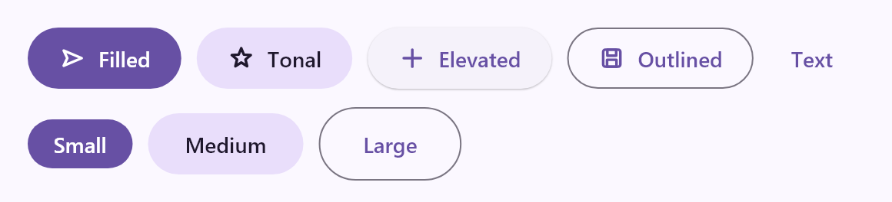
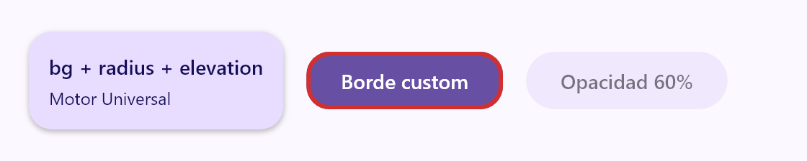
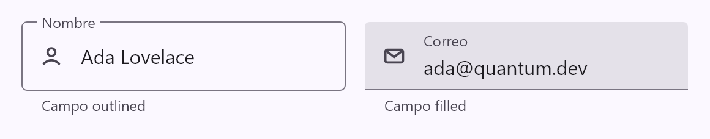
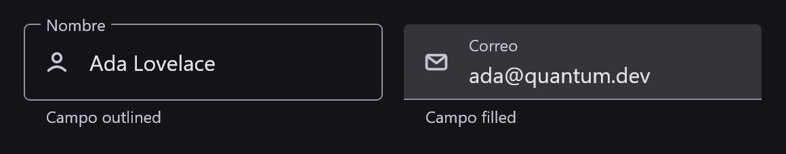
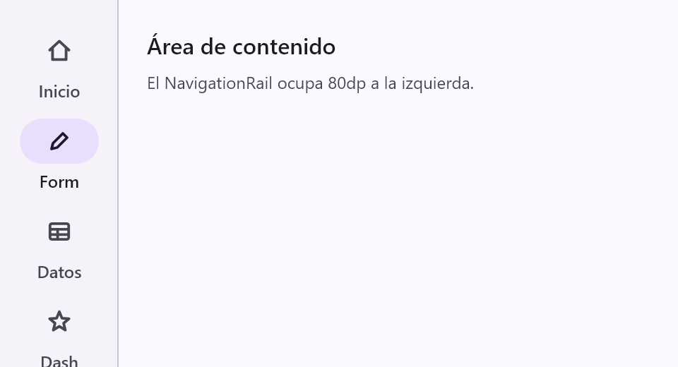
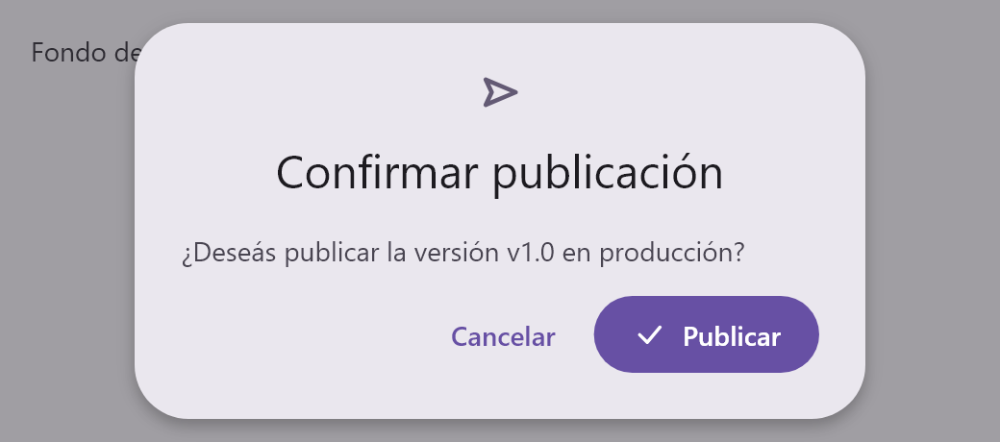
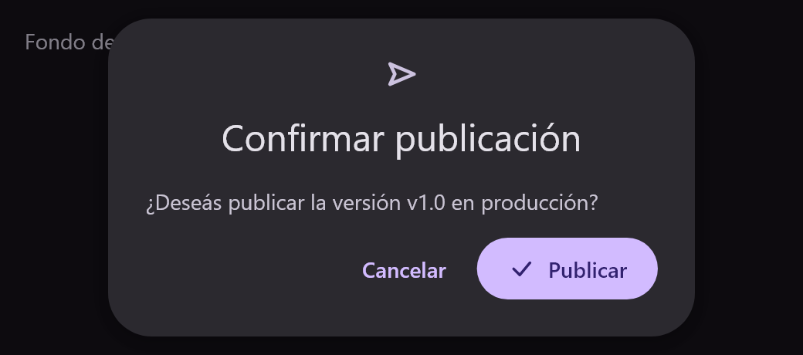
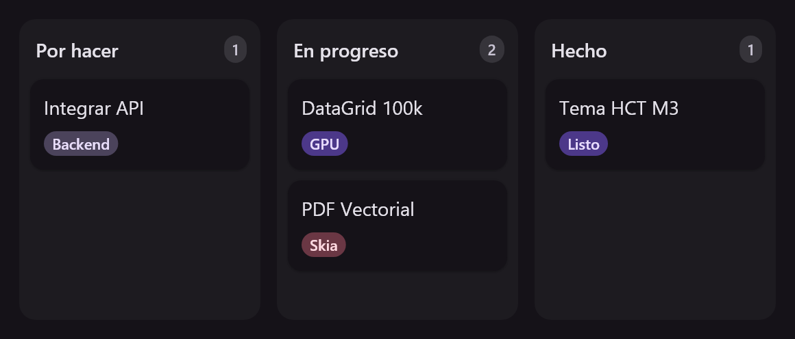
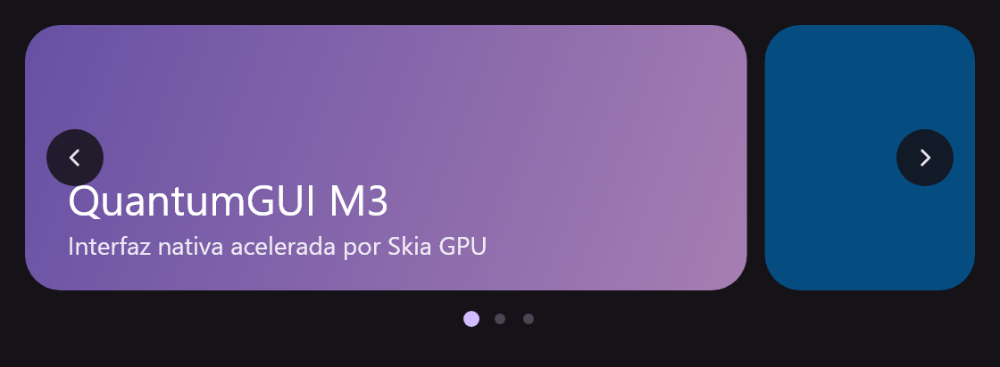
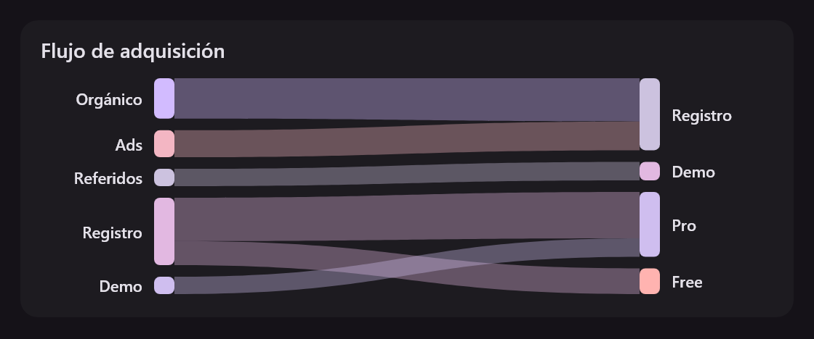

Guía Completa de Tutoriales
Curso práctico paso a paso en 37 capítulos individuales — desde tu primera ventana
100% Material Design 3 en GPU hasta cada pieza de la arquitectura empresarial
(DataGrid 100k, Async, PDF Vectorial, Atajos, RBAC, i18n, Router y Persistencia) explicada por separado con todos sus parámetros.
1. Tu primera ventana en GPU (ui.window y win.run)
PrincipianteToda aplicación en QuantumGUI comienza creando una ventana nativa acelerada por GPU con ui.window(). Dentro de su bloque with win: declarás los contenedores y controles (100% Material Design 3), y finalmente iniciás el bucle de eventos con win.run(). No necesitás configurar OpenGL, ni crear contextos Skia manualmente, ni escribir bucles de repintado.
- Importá
Themeyuidesdequantumgui. - Creá la ventana con título, tamaño inicial en píxeles lógicos (dp) y un tema opcional.
- Usá
with win:y un contenedor raíz (comoui.column) para organizar tus widgets. - Llamá a
win.run()al final para abrir la ventana nativa en GPU.


| Parámetro / Método | Tipo | Por defecto | Qué hace |
|---|---|---|---|
title | str | "QuantumGUI" | Texto mostrado en la barra superior de la ventana del sistema operativo. |
width / height | int / int | 960 / 680 | Dimensiones iniciales en dp (se escalan automáticamente en monitores HiDPI / 4K). |
theme | Theme | None | Theme() | Esquema de colores M3 (si se omite, crea un tema claro con semilla violeta #6750A4). |
resizable | bool | True | Si es False, bloquea el redimensionado de la ventana por el usuario. |
win.run() | Método | — | Abre la ventana y ejecuta el bucle principal nativo de eventos y renderizado GPU. |
win.open() / win.close() | Métodos | — | Permite abrir ventanas secundarias dinámicamente en ejecución o cerrar una ventana individual. |
from quantumgui import Theme, ui
theme = Theme(seed="#6750A4", mode="light")
win = ui.window("Mi Primera App", width=640, height=400, theme=theme, resizable=True)
with win:
with ui.column(gap=16).padding(28):
ui.text("¡Hola QuantumGUI!", role="headline_large", color="primary")
ui.text("Interfaz 100% Material Design 3 acelerada por GPU.", color="on_surface_variant")
with ui.row(gap=10):
ui.button("Empezar", variant="filled", icon="send", on_click=lambda: ui.snackbar("¡Bienvenido!"))
ui.button("Explorar", variant="outlined", icon="star")
win.run()ui.run(win1, win2) compartiendo el mismo Theme y ui.state().2. Tipografía y Botones Material Design 3
PrincipianteMaterial Design 3 define una jerarquía clara tanto para texto (15 roles tipográficos) como para acciones (5 variantes de botón común, IconButton circular y FAB flotante). Usar la variante adecuada le indica al usuario cuál es la acción principal y cuáles son secundarias.
- Usá
ui.text(..., role=...)para títulos (headline_*,title_*), cuerpo (body_*) y etiquetas (label_*). - Reservá
variant='filled'para la acción principal de la pantalla y'tonal'/'outlined'/'text'para acciones secundarias. - Elegí entre
size='small'(32dp),'medium'(40dp) o'large'(48dp) según la densidad de tu interfaz. - Usá
ui.fab(icon, label=...)para la acción creativa destacada (si pasáslabelse convierte en Extended FAB).


| Parámetro / Método | Tipo | Por defecto | Qué hace |
|---|---|---|---|
role (ui.text) | TypographyRole | "body_medium" | Escala oficial M3: display_*, headline_*, title_*, body_*, label_* (large/medium/small). |
size / weight / align / underline | float / int / str / bool | Del role | Sobrescriben tamaño en dp, peso (300..700), alineación ('left'|'center'|'right') y subrayado. |
variant (ui.button) | "filled"|"tonal"|"elevated"|"outlined"|"text" | "filled" | Las 5 variantes oficiales de botón común Material Design 3. |
size (ui.button) | "small"|"medium"|"large" | "medium" | Altura y padding predefinidos (32dp, 40dp, 48dp). |
icon | str | None | None | Ícono vectorial opcional ('send', 'save', 'add', 'star', 'edit', 'delete', etc.). |
disabled / on_click | bool / Callable | False / None | Desactiva interacción con estilo M3 o ejecuta una función al hacer clic. |
from quantumgui import ui
win = ui.window("Tipografía y Acciones", width=700, height=420)
with win:
with ui.column(gap=14).padding(24):
ui.text("Jerarquía Tipográfica M3", role="headline_medium", color="primary")
ui.text("Subtítulo con peso 600 y subrayado", role="body_large", weight=600, underline=True)
with ui.row(gap=10, wrap=True):
ui.button("Principal (Filled)", variant="filled", icon="send")
ui.button("Secundario (Tonal)", variant="tonal", icon="star")
ui.button("Elevado", variant="elevated", icon="add")
ui.button("Contorno", variant="outlined", icon="save")
ui.button("Texto", variant="text")
with ui.row(gap=12, align="center"):
ui.icon_button("settings", variant="outlined")
ui.fab("add", size="small", variant="surface")
ui.fab("send", label="Nuevo mensaje", variant="primary")
win.run()3. Estado Reactivo (ui.state) y Two-Way Binding
PrincipianteEn vez de buscar widgets manualmente para actualizar sus textos cuando cambia un dato, QuantumGUI ofrece ui.state(valor_inicial). Cada vez que asignás mi_estado.value = nuevo_valor, todos los widgets enlazados con bind=mi_estado y los textos reactivos se actualizan y repintan solos.
- Creá tus variables reactivas antes de declarar los widgets:
contador = ui.state(0). - Pasá
bind=mi_estadoa cualquier input (text_field,slider,switch,select, etc.) para sincronizar en doble sentido. - Pasá una
lambdaaui.text(lambda: f'...')para calcular textos derivados automáticamente. - Si necesitás ejecutar lógica extra cada vez que cambia un estado, usá
mi_estado.subscribe(mi_funcion).
| Parámetro / Método | Tipo | Por defecto | Qué hace |
|---|---|---|---|
initial | T (cualquier tipo) | Requerido | Valor inicial almacenado dentro del contenedor State[T]. |
state.value | Propiedad R/W | initial | Lee el valor actual o lo modifica notificando a todos los suscriptores. |
state.subscribe(fn) | Callable[[T], None] | — | Registra un callback que recibe el nuevo valor cada vez que state.value cambia. |
bind=state | Parámetro de widgets | None | Enlaza bidireccionalmente un widget con el estado (editar el widget actualiza el estado y viceversa). |
from quantumgui import ui
nombre = ui.state("Ada")
volumen = ui.state(65.0)
activo = ui.state(True)
# Suscripción manual opcional (ej. guardar en disco o loguear)
volumen.subscribe(lambda v: print(f"Nuevo volumen: {v:.0f}%"))
win = ui.window("Estado Reactivo", width=560, height=360)
with win:
with ui.column(gap=14, align="stretch").padding(24):
ui.text(
lambda: f"Usuario: {nombre.value} · Volumen: {volumen.value:.0f}% · {'ON' if activo.value else 'OFF'}",
role="title_medium",
color="primary",
)
ui.text_field("Nombre", bind=nombre).fill_width()
ui.slider(min=0, max=100, bind=volumen).fill_width()
ui.switch(label="Audio activado", bind=activo)
ui.button("Resetear", variant="outlined", on_click=lambda: (setattr(nombre, "value", "Ada"), setattr(volumen, "value", 50.0)))
win.run()ui.state() desde dos ventanas abiertas al mismo tiempo, ambas ventanas se sincronizan instantáneamente.4. Layouts y Contenedores (Column, Row, Card, Grid, SplitView, ScrollView)
PrincipianteEl motor de layout flex de QuantumGUI calcula tamaños y posiciones en un pase rápido de medición (measure) y ubicación (layout). Combinando los 6 contenedores principales podés construir desde formularios compactos hasta interfaces complejas tipo IDE con paneles redimensionables y áreas de scroll independientes.
- Usá
ui.column(gap, align, justify)para apilar elementos en vertical yui.row(...)para colocarlos en horizontal. - Activá
wrap=Trueenui.rowcuando quieras que los botones o chips salten de línea si no entran. - Usá
.expand(flex=1.0)en hijos derow/columnpara repartir el espacio libre proporcionalmente. - Usá
ui.grid(columns=3, gap=12)para grillas simétricas,ui.split_view(ratio=0.35)para paneles arrastrables yui.scroll_view()para listas largas con barra de scroll M3.


| Parámetro / Método | Tipo | Por defecto | Qué hace |
|---|---|---|---|
gap | float | 0.0 (12.0 en Card) | Separación en dp entre hijos consecutivos en el eje principal. |
align | "start"|"center"|"end"|"stretch" | "start" / "center" | Alineación transversal ('stretch' estira los hijos al ancho/alto del contenedor). |
justify | "start"|"center"|"end"|"space_between" | "start" | Distribución de los hijos a lo largo del eje principal. |
wrap / run_gap (Row) | bool / float | None | False / gap | Permite saltar a nuevas líneas cuando el contenido supera el ancho disponible. |
columns / row_gap (Grid) | int / float | None | 3 / gap | Número fijo de columnas de igual ancho y separación entre filas. |
ratio / min_ratio / max_ratio (SplitView) | float | 0.35 / 0.15 / 0.85 | Proporción inicial del panel izquierdo y límites de arrastre del divisor. |
show_scrollbar / wheel_step (ScrollView) | bool / float | True / 44.0 | Muestra la barra de scroll redondeada M3 y define los píxeles por paso de rueda. |
from quantumgui import ui
win = ui.window("Layouts Pro", width=880, height=560)
with win:
with ui.column(gap=16, align="stretch").padding(20).fill_height():
with ui.grid(columns=3, gap=12):
for var in ("filled", "elevated", "outlined"):
with ui.card(variant=var, gap=4):
ui.text(f"Card {var}", role="title_small")
ui.text("Se adapta al ancho de la columna", role="body_small", color="on_surface_variant")
with ui.split_view(ratio=0.32, height=300):
with ui.scroll_view(gap=8).padding(12).border("outline_variant", 1).radius(12):
for i in range(1, 15):
ui.text(f"Elemento de lista #{i}")
with ui.card(variant="outlined", gap=8).fill_height():
ui.text("Panel principal", role="title_medium")
ui.text("Arrastrá el divisor vertical para redimensionar.", color="on_surface_variant")
win.run().fill_width() o .expand() en contenedores hijos cuando quieras que ocupen todo el espacio horizontal disponible.5. Color Dinámico HCT, Modo Oscuro, Contraste y Fuentes Propias
IntermedioTheme implementa el espacio de color perceptual HCT (Hue, Chroma, Tone) de Material Design 3. Con un solo color hexadecimal semilla (seed), deriva automáticamente las 6 paletas tonales completas con contraste garantizado para modo claro, modo oscuro y los 3 niveles oficiales de accesibilidad (standard, medium, high).
- Opcionalmente cargá tu fuente
.ttfo.otf(ej. Inter o Roboto) conui.load_font('ruta.ttf'). - Instanciá
Theme(seed='#0061A4', mode='light', contrast='standard', font_family=...). - Cambiá
theme.seed,theme.modeotheme.contrastdesde cualquier botón: todas las ventanas suscritas se repintan al instante.
| Parámetro / Método | Tipo | Por defecto | Qué hace |
|---|---|---|---|
seed | str | Color | "#6750A4" | Color base hexadecimal desde el que se generan los 30+ roles M3 (primary, surface_container, etc.). |
mode | "light" | "dark" | "light" | Esquema claro u oscuro. También puedes alternarlo con theme.toggle_mode(). |
contrast | "standard" | "medium" | "high" | "standard" | Nivel oficial de contraste M3 (en 'high' cumple WCAG AAA). |
font_family | str | "Segoe UI" | Familia tipográfica usada por Skia en toda la aplicación. |
ui.load_font(path, alias=None) | str | Path -> str | — | Registra una fuente .ttf/.otf en Skia y devuelve el nombre para pasar a Theme(font_family=...). |
from quantumgui import Theme, ui
theme = Theme(seed="#6750A4", mode="light", contrast="standard")
win = ui.window("Motor de Tema HCT", width=680, height=300, theme=theme)
with win:
with ui.column(gap=16).padding(24):
ui.text("Cambia semilla, modo y contraste en vivo", role="headline_small", color="primary")
with ui.row(gap=10, wrap=True):
ui.button("Violeta", variant="tonal", on_click=lambda: setattr(theme, "seed", "#6750A4"))
ui.button("Océano", variant="tonal", on_click=lambda: setattr(theme, "seed", "#0061A4"))
ui.button("Esmeralda", variant="tonal", on_click=lambda: setattr(theme, "seed", "#006D3B"))
ui.button("Terracota", variant="tonal", on_click=lambda: setattr(theme, "seed", "#9C4146"))
with ui.row(gap=12, align="center"):
ui.switch(label="Modo Oscuro", on_change=lambda d: setattr(theme, "mode", "dark" if d else "light"))
ui.segmented_button(
["standard", "medium", "high"],
selected="standard",
on_change=lambda c: setattr(theme, "contrast", c),
)
win.run()Theme con prefs.bind_theme(theme) (ver Tutorial 22).6. Motor Universal de Estilos (Modificadores Encadenables)
IntermedioTodos los 88 controles de QuantumGUI heredan de Widget y comparten un Motor Universal de Estilos. Esto te permite personalizar bordes, radios (incluso asimétricos por esquina), fondo, color de acento, elevación con sombra, opacidad en GPU, límites de tamaño y tooltips en cualquier widget encadenando métodos.
- Encadená
.bg(color)y.fg(color)(o su alias.accent(color)) aceptando'#hex', objetosColoro tokens M3 como'primary_container'. - Usá
.border(color, width)para bordes nítidos interiores (box-sizing: border-box) que nunca se parten al hacer hover o click. - Personalizá esquinas con
.radius(16), un token M3 ('large','full') o una tupla de 4 esquinas(tl, tr, br, bl). - Agregá profundidad con
.elevation(level, shadow_color=...)(0 a 5), transparencia GPU con.opacity(0.0..1.0)y ayuda contextual con.tooltip('...').


| Parámetro / Método | Tipo | Por defecto | Qué hace |
|---|---|---|---|
.bg(color) | "#hex" | Color | token M3 | Del tema | Sobrescribe el color de fondo del control o contenedor. |
.fg(color) / .accent(color) | "#hex" | Color | token M3 | Del tema | Sobrescribe el color de texto, ícono o acento activo (switch, slider, botón, rating). |
.border(color, width=1.0) | ColorSpec, float | None, 1.0 | Aplica un borde interior preciso sin desbordar widget.rect. |
.radius(val) / .shape(val) | ShapeToken | float | (tl,tr,br,bl) | Del control | Radio uniforme en dp, token M3 ('none','small','medium','large','full') o 4 esquinas. |
.elevation(level, shadow_color=None) | int (0..5), ColorSpec | 0 | Sombra ambiental + direccional M3 en 5 niveles de profundidad. |
.opacity(alpha) | float (0.0..1.0) | 1.0 | Transparencia acelerada en GPU aplicada al widget y a todos sus hijos. |
.size(w, h) / .min_size / .max_size | float, float | Auto / None | Dimensiones exactas y límites mínimos/máximos de layout. |
.padding(v) / .margin(v) | float | (v,h) | (t,r,b,l) | 0 | Espaciado interno y externo en dp. |
.tooltip(text) | str | None | None | Tooltip flotante M3 que aparece al mantener el mouse sobre el control. |
from quantumgui import ui
win = ui.window("Motor Universal de Estilos", width=700, height=300)
with win:
with ui.row(gap=18, align="center").padding(28):
with ui.column(gap=4).padding(16).bg("primary_container").radius(16).elevation(2):
ui.text("Contenedor personalizado", role="title_small", color="on_primary_container")
ui.text("bg + radius + elevation", role="body_small", color="on_primary_container")
ui.button("Borde y esquinas", variant="filled").border("#D32F2F", 3).radius((18, 4, 18, 4)).tooltip("Borde de 3dp")
ui.switch(value=True, label="Acento verde").accent("#16A34A")
ui.button("60% opacidad", variant="tonal").opacity(0.6)
win.run()self, por lo que podés encadenarlos en cualquier orden en una sola expresión.7. Campos de Texto, Fechas, Horas y Controles de Selección
IntermedioQuantumGUI incluye todos los controles clásicos de formulario en variantes outlined y filled: TextField (con selección por arrastre, Ctrl+C/V/X/A, modo contraseña y contador), TextArea multilínea, Select, DatePicker (calendario M3), TimePicker (dial 24h/12h), NumberInput, ColorPicker, FilePicker, Switch, Checkbox (con tristate), RadioGroup, Slider y RangeSlider.
- Elegí
variant='outlined'(borde completo con muesca animada) ovariant='filled'(fondo tonal con línea inferior). - Usá
supporting_textpara texto guía y asignácampo.error_text = '...'para marcar errores en rojo. - Para fechas y horas, usá
ui.date_pickeryui.time_picker(use_24h=True|False)que abren overlays flotantes interactivos.


| Parámetro / Método | Tipo | Por defecto | Qué hace |
|---|---|---|---|
variant | "outlined" | "filled" | "outlined" | Estilo oficial M3 del campo (disponible en TextField, TextArea, Select, DatePicker, TimePicker, NumberInput, ColorPicker y FilePicker). |
leading_icon / trailing_icon | str | None | None | Íconos vectoriales a izquierda o derecha dentro del campo. |
prefix / suffix / password / max_length | str / bool / int | None / False | Prefijo/sufijo fijo, ocultamiento con puntos (•) y contador automático de caracteres. |
supporting_text / error_text | str | None | None | Texto de ayuda inferior o mensaje de error en rojo M3. |
use_24h (TimePicker) | bool | True | Alterna entre reloj analógico de doble anillo 24h y selector 12h con AM/PM. |
tristate (Checkbox) | bool | False | Habilita el tercer estado indeterminado (value=None). |
step (Slider / RangeSlider / NumberInput) | float | None | None / 1 | Ajusta valores a pasos discretos. |
from datetime import date, time as dt_time
from quantumgui import ui
win = ui.window("Controles de Formulario", width=740, height=520)
with win:
with ui.scroll_view(gap=14).padding(24).fill_height():
with ui.grid(columns=2, gap=14):
ui.text_field("Usuario", variant="outlined", leading_icon="person", max_length=30).fill_width()
ui.text_field("Contraseña", variant="filled", leading_icon="lock", password=True).fill_width()
ui.select("Plan", ["Starter", "Pro", "Enterprise"], value="Pro").fill_width()
ui.number_input("Licencias", value=5, min=1, max=100, step=1).fill_width()
ui.date_picker("Inicio", value=date(2026, 11, 25)).fill_width()
ui.time_picker("Reunión", value=dt_time(14, 30), use_24h=True).fill_width()
ui.text_area("Observaciones", rows=3, placeholder="Notas internas...").fill_width()
with ui.row(gap=20, wrap=True):
ui.checkbox(value=True, label="Aceptar términos")
ui.checkbox(value=None, tristate=True, label="Parcial")
ui.radio_group(["Mensual", "Anual"], value="Anual", direction="horizontal")
ui.range_slider(start=20, end=80, min=0, max=100, step=5).fill_width()
win.run()Tab y Shift+Tab.8. Entradas Pro: MaskedInput, Autocomplete, TagInput, OTP, Rating, DropZone y SignaturePad
IntermedioPara sistemas reales que requieren datos estructurados, verificación 2FA, adjuntos o firmas digitales, QuantumGUI incluye 7 controles especializados listos para producción sin librerías externas.
- Usá
ui.masked_input('CUIT', mask='cuit')(o'phone','card','date','cbu', o un patrón custom como'AA-###-AA'). Leé el valor limpio con.raw_valuey verificá si está completo con.is_complete. - Usá
ui.autocompletecuando tengas cientos de opciones para filtrar escribiendo, yui.tag_inputpara múltiples chips removibles. - Para códigos 2FA usá
ui.otp_input(length=6, on_complete=...); para calificacionesui.rating(allow_half=True). - Usá
ui.drop_zone()para adjuntar múltiples archivos yui.signature_pad()para capturar firmas vectoriales y exportarlas a PNG consig.export_png('firma.png').


| Parámetro / Método | Tipo | Por defecto | Qué hace |
|---|---|---|---|
mask (MaskedInput) | str | Requerido | Preset ('cuit','phone','card','date','time','cbu') o patrón con # (dígito), A (letra), * (alfanumérico). |
max_suggestions (Autocomplete) | int | 6 | Cantidad máxima de sugerencias mostradas en el desplegable filtrado. |
max_tags (TagInput) | int | None | None | Límite opcional de etiquetas permitidas. |
length / digits_only / on_complete (OTPInput) | int / bool / Callable | 6 / True / None | Cantidad de casillas, restricción numérica y callback al completar el código. |
max_stars / allow_half / star_size (Rating) | int / bool / float | 5 / False / 28.0 | Número de estrellas, soporte de medias estrellas y tamaño en dp. |
multiple / filetypes (DropZone) | bool / Sequence | True / (*.*) | Selección de varios archivos y filtros de extensión del diálogo nativo. |
stroke_width / .export_png(path) (SignaturePad) | float / Método | 2.4 / — | Grosor del trazo vectorial y exportación a PNG transparente @2x. |
from datetime import date
from quantumgui import ui
win = ui.window("Entradas Pro", width=720, height=640)
with win:
with ui.scroll_view(gap=14).padding(24).fill_height():
with ui.grid(columns=2, gap=14):
cuit = ui.masked_input("CUIT", mask="cuit", value="20123456789").fill_width()
ui.autocomplete("País", ["Argentina", "Brasil", "Chile", "España", "México"], value="Argentina").fill_width()
ui.date_range_picker("Período", start=date(2026, 11, 1), end=date(2026, 11, 30)).fill_width()
ui.otp_input(length=6, on_complete=lambda code: ui.snackbar(f"Código 2FA: {code}", window=win))
ui.tag_input("Etiquetas", tags=["Python", "Skia GPU", "M3"]).fill_width()
ui.rating(value=4.5, max_stars=5, allow_half=True)
ui.drop_zone(files=["contrato.pdf", "anexo.xlsx"]).fill_width()
firma = ui.signature_pad(label="Firma del cliente", height=130).fill_width()
ui.button("Exportar firma PNG", icon="save", on_click=lambda: (firma.export_png("firma.png"), ui.snackbar("Guardada firma.png", window=win)))
win.run()MaskedInput podés leer cuit.raw_value para guardar '20123456789' en base de datos sin los guiones.9. Motor Declarativo de Formularios y Validadores (ui.form y ui.validators)
IntermedioEn formularios con muchos campos, validar cada input con if repetitivos vuelve el código difícil de mantener. ui.form() centraliza las reglas de validación, pinta automáticamente error_text en cada campo inválido, detecta si hay cambios sin guardar (form.is_dirty) y entrega un diccionario limpio con todos los valores.
- Creá el controlador con
form = ui.form(on_submit=mi_funcion). - Registrá cada campo envolviéndolo con
form.field('clave', widget, [regla1, regla2])usandoui.validators. - Conectá tu botón Guardar a
form.submit(que valida primero y solo llama aon_submit(values)si todo es válido). - Usá
form.reset()para restaurar valores iniciales y limpiar errores, oform.is_dirtypara avisar antes de cerrar.
| Parámetro / Método | Tipo | Por defecto | Qué hace |
|---|---|---|---|
on_submit (ui.form) | Callable[[dict[str, Any]], None] | None | Se ejecuta con form.values solo cuando form.validate() devuelve True. |
form.field(name, widget, rules) | str, Widget, Sequence | — | Registra el widget bajo 'name' con su lista de reglas y devuelve el widget para encadenar. |
v.required(msg) | ValidatorFn | Obligatorio | Verifica que el campo no sea None ni string vacío. |
v.min_length(n) / v.max_length(n) | ValidatorFn | — | Controla longitud mínima o máxima de texto. |
v.email(msg) / v.regex(pat, msg) | ValidatorFn | — | Valida formato de correo electrónico o cualquier expresión regular. |
v.number_range(lo, hi, msg) | ValidatorFn | — | Valida que el número esté dentro de [lo, hi]. |
v.complete_mask(msg) | ValidatorFn | — | Verifica que un MaskedInput tenga todos los huecos completos (.is_complete). |
v.custom(predicate, msg) | ValidatorFn | — | Regla personalizada con cualquier función booleana lambda val: ... |
form.validate() / form.submit() / form.reset() | Métodos | — | Ejecuta validación, valida+envía, o restaura valores base y limpia errores. |
form.is_dirty / form.values / form.errors | Propiedades | — | Indica si hubo cambios, devuelve el dict de valores actuales y el dict de errores. |
from quantumgui import ui
v = ui.validators
form = ui.form(on_submit=lambda data: ui.snackbar(f"Guardado: {data['nombre']} ({data['cuit']})", action="OK"))
win = ui.window("Validación Declarativa", width=560, height=440)
with win:
with ui.column(gap=14, align="stretch").padding(24):
ui.text("Alta con validación automática", role="headline_small", color="primary")
form.field("nombre", ui.text_field("Nombre"), [v.required(), v.min_length(3)]).fill_width()
form.field("email", ui.text_field("Email"), [v.required(), v.email()]).fill_width()
form.field("cuit", ui.masked_input("CUIT", "cuit"), [v.complete_mask("Completa los 11 dígitos")]).fill_width()
form.field("edad", ui.number_input("Edad", value=25), [v.number_range(18, 99, "Debe ser mayor de 18")]).fill_width()
with ui.row(gap=10, justify="end").fill_width():
ui.button("Restaurar", variant="text", on_click=form.reset)
ui.button("Enviar", variant="filled", icon="check", on_click=form.submit)
win.run()form.mark_clean() después de guardar en base de datos, form.is_dirty vuelve a False tomando los valores actuales como nueva línea base.10. Navegación de Escritorio (TopAppBar, NavigationRail, Drawer, Tabs y Breadcrumbs)
IntermedioLas aplicaciones de escritorio organizan múltiples pantallas combinando una barra superior (TopAppBar), navegación lateral compacta (NavigationRail) o cajón deslizable (NavigationDrawer), pestañas internas (Tabs) y rutas jerárquicas (Breadcrumbs).
- Declarás un
ui.state(0)para almacenar el índice de la página activa. - Enlazás
bind=paginatanto alNavigationRailcomo alNavigationDrawerpara mantenerlos sincronizados. - Usá
on_changepara mostrar/ocultar los contenedores de cada página con.visible(i == idx). - Colocá acciones rápidas (botones, íconos, switch de modo oscuro) dentro del bloque
with ui.top_app_bar(...):para que se alineen solas a la derecha.


| Parámetro / Método | Tipo | Por defecto | Qué hace |
|---|---|---|---|
leading_icon / on_leading_click (TopAppBar) | str / Callable | None | Ícono izquierdo (ej. 'menu') y acción al pulsarlo (ej. abrir el NavigationDrawer). |
items (Rail / Bar) | Sequence[tuple[str, str]] | Requerido | Lista de pares (icono, etiqueta) para cada sección. |
modal / width (NavigationDrawer) | bool / float | True / 300.0 | Si es True se abre como overlay con scrim vía drawer.open(); si es False queda fijo en pantalla. |
variant (Tabs) | "primary" | "secondary" | "primary" | Estilo oficial M3 de pestañas con indicador animado. |
separator / on_select (Breadcrumbs) | str / Callable | "›" / None | Separador visual y callback (indice, etiqueta) al hacer clic en un nivel padre. |
from quantumgui import ui
pagina = ui.state(0)
win = ui.window("Shell de Navegación", width=860, height=520)
vistas = []
def cambiar(idx: int) -> None:
for i, v in enumerate(vistas):
v.visible(i == idx)
with win:
drawer = ui.navigation_drawer(
["Menú", ui.DrawerItem("home", "Inicio"), ui.DrawerItem("table", "Reportes", badge="4")],
title="Mi App",
modal=True,
bind=pagina,
on_change=cambiar,
window=win,
)
with ui.column(align="stretch").fill_width().fill_height():
with ui.top_app_bar("Mi App", leading_icon="menu", on_leading_click=drawer.open):
ui.icon_button("notifications", on_click=lambda: ui.snackbar("Sin alertas", window=win))
with ui.row(align="stretch").expand().fill_width():
ui.navigation_rail([("home", "Inicio"), ("table", "Reportes")], bind=pagina, on_change=cambiar)
with ui.column(gap=12).padding(24).expand() as v0:
vistas.append(v0)
ui.breadcrumbs(["Inicio", "Resumen"])
ui.text("Página de Inicio", role="headline_small")
with ui.column(gap=12).padding(24).expand() as v1:
v1.visible(False)
vistas.append(v1)
ui.breadcrumbs(["Inicio", "Reportes"])
ui.text("Página de Reportes", role="headline_small")
win.run()/clientes/42) e historial Atrás/Adelante, revisá el Tutorial 21 sobre ui.router().11. Overlays M3: Dialog, BottomSheet, Menu, Snackbar y CommandPalette (Ctrl+K)
IntermedioLos overlays se renderizan en una capa superior independiente sobre toda la ventana, capturan el foco de teclado (focus trapping) y se cierran automáticamente al presionar Escape o hacer clic fuera (cuando dismissible=True).
- Declarás
Dialog,BottomSheet,MenuyCommandPalettedentro dewith win:(tienenauto_attach=False, así que no ocupan espacio en el layout). - Abrilos desde cualquier botón o atajo con
dlg.open(),sheet.open(),menu.open_at(x, y)opalette.open(). - Para notificaciones breves no bloqueantes, llamá directamente a
ui.snackbar('Guardado', action='Deshacer').


| Parámetro / Método | Tipo | Por defecto | Qué hace |
|---|---|---|---|
width / dismissible (Dialog) | float / bool | 420.0 / True | Ancho del modal en dp y si se cierra con Escape o clic en el fondo oscuro. |
max_width (BottomSheet) | float | 640.0 | Ancho máximo de la hoja inferior modal con manija superior. |
items (Menu) | Sequence[MenuItem] | Requerido | Lista de ui.MenuItem(label, icon=None, shortcut=None, on_click=None, disabled=False). |
duration / action / on_action (Snackbar) | float / str / Callable | 3.5 / None | Duración en segundos y botón de acción opcional. |
commands / placeholder (CommandPalette) | Sequence[CommandItem] / str | Requerido | Comandos filtrables en vivo con ícono y atajo mostrado a la derecha. |
from quantumgui import ui
win = ui.window("Overlays M3", width=720, height=440)
with win:
with ui.dialog("Eliminar registro", icon="delete", width=400, window=win) as dlg:
ui.text("Esta acción no se puede deshacer.", color="on_surface_variant")
with ui.row(gap=8, justify="end").fill_width():
ui.button("Cancelar", variant="text", on_click=dlg.close)
ui.button("Eliminar", variant="filled", on_click=lambda: (dlg.close(), ui.snackbar("Eliminado", window=win)))
with ui.bottom_sheet("Compartir", max_width=460, window=win) as bs:
ui.list_item("Copiar enlace", leading_icon="add", on_click=bs.close)
ui.list_item("Enviar por correo", leading_icon="mail", on_click=bs.close)
cp = ui.command_palette([
ui.CommandItem("Abrir Dialog", action=dlg.open, icon="delete", shortcut="Ctrl+D"),
ui.CommandItem("Abrir BottomSheet", action=bs.open, icon="send"),
], window=win)
with ui.row(gap=12).padding(28):
ui.button("Dialog", on_click=dlg.open)
ui.button("BottomSheet", variant="tonal", on_click=bs.open)
ui.button("CommandPalette (Ctrl+K)", variant="outlined", on_click=cp.open)
win.shortcut("Ctrl+K", cp.open)
win.run()CommandPalette, el usuario puede escribir para filtrar, moverse con ↑/↓ y ejecutar el comando con Enter.12. Productividad Desktop: KanbanBoard (Drag & Drop), CalendarView, Stepper, Timeline y PropertyGrid
AvanzadoConstruí aplicaciones completas de gestión de proyectos, turnos o herramientas creativas con controles interactivos acelerados por GPU: tablero KanbanBoard con arrastre real de tarjetas entre columnas, agenda mensual CalendarView, asistente Stepper, línea de tiempo Timeline e inspector PropertyGrid.
- Pasá un diccionario
{'Columna': [ui.KanbanCard(...)]}aui.kanban_boardy escuchá movimientos conon_move(card, origen, destino). - Cargá eventos en
ui.calendar_view([ui.CalendarEvent(date(...), 'Título', tone='primary')])con clics en días o eventos. - Usá
ui.property_grid([ui.PropertyItem(...)])para editar propiedades tipadas (text,number,bool,choice,color) en vivo.


| Parámetro / Método | Tipo | Por defecto | Qué hace |
|---|---|---|---|
columns / on_move (KanbanBoard) | dict[str, list[KanbanCard]] / Callable | Requerido / None | Columnas con tarjetas arrastrables y callback (card, from_col, to_col). |
events / year / month (CalendarView) | Sequence[CalendarEvent] / int | () / Hoy | Eventos por fecha y mes inicial mostrado con flechas de navegación. |
steps / current / error_step (Stepper) | Sequence[str] / int / int|None | Requerido / 0 / None | Pasos del wizard, paso actual y paso opcional en estado error. |
items (Timeline) | Sequence[TimelineItem] | Requerido | Nodos con título, descripción, timestamp, ícono y tono M3. |
items / on_change (PropertyGrid) | Sequence[PropertyItem] / Callable | Requerido / None | Propiedades editables inline y callback (key, nuevo_valor). |
from datetime import date
from quantumgui import ui
win = ui.window("Productividad Desktop", width=960, height=680)
with win:
with ui.scroll_view(gap=16).padding(20).fill_height():
st = ui.stepper(["Planificación", "Ejecución", "Revisión", "Entrega"], current=1)
ui.kanban_board(
{
"Por hacer": [ui.KanbanCard("Diseñar reportes", tag="BI", tone="secondary")],
"En progreso": [ui.KanbanCard("Arrastrame a Hecho →", tag="GPU", tone="primary")],
"Hecho": [ui.KanbanCard("Setup inicial", tag="OK", tone="tertiary")],
},
height=210,
on_move=lambda card, src, dst: ui.snackbar(f"{card.title}: {src} → {dst}", window=win),
).fill_width()
with ui.row(gap=14).fill_width():
ui.calendar_view([ui.CalendarEvent(date(2026, 11, 25), "Release v1.0", tone="primary")], year=2026, month=11, height=270).expand()
ui.property_grid(
[
ui.PropertyItem("proyecto", "ERP 2026", type="text", label="Proyecto"),
ui.PropertyItem("activo", True, type="bool", label="Activo"),
ui.PropertyItem("prioridad", "Alta", type="choice", choices=["Baja", "Media", "Alta"], label="Prioridad"),
ui.PropertyItem("color", "#6750A4", type="color", label="Color"),
],
on_change=lambda k, v: ui.snackbar(f"{k} = {v}", window=win),
).expand()
win.run()KanbanBoard, Skia dibuja automáticamente una tarjeta flotante elevada siguiendo el cursor y resalta la columna destino.13. Display, Feedback y Dibujo Directo GPU (Alert, Avatar, Carousel, CodeBlock, Markdown y VectorCanvas)
AvanzadoEnriquecé tus pantallas con alertas semánticas (Alert), avatares con estado de presencia (Avatar / AvatarGroup), galerías M3 (Carousel), estados vacíos (EmptyState), visores de código y Markdown nativos (CodeBlock, MarkdownView), barra de estado desktop (StatusBar) y dibujo directo en Skia (VectorCanvas).
- Usá
ui.alert(..., severity='info'|'success'|'warning'|'error', closable=True)para avisos persistentes en pantalla. - Usá
ui.markdown_view(texto_md)para documentación embebida o notas de versión sin navegador. - Cuando necesites un diagrama custom o gráfico 2D propio, pasá tu función
on_draw(canvas, rect, theme)aui.vector_canvas.


| Parámetro / Método | Tipo | Por defecto | Qué hace |
|---|---|---|---|
severity / action_label / closable (Alert) | str / str / bool | "info" / None / False | Paleta semántica, botón de acción rápido y botón cerrar ×. |
status (Avatar) | "online"|"away"|"busy"|"offline"|None | None | Dibuja el indicador de presencia en la esquina inferior derecha. |
max_visible (AvatarGroup) | int | 4 | Cantidad máxima visible antes de agrupar el resto en una burbuja +N. |
items / height (Carousel) | Sequence[CarouselItem] / float | Requerido / 190.0 | Diapositivas Hero + Peek con flechas e indicadores de puntos. |
on_draw / on_click (VectorCanvas) | Callables | Requerido / None | Callback de dibujo directo en Skia GPU y clic con coordenadas locales (x, y). |
import skia
from quantumgui import ui
win = ui.window("Display y VectorCanvas", width=760, height=620)
with win:
with ui.column(align="stretch").fill_width().fill_height():
with ui.scroll_view(gap=14).padding(20).expand():
ui.alert("Sincronización completa", message="Base de datos actualizada.", severity="success", closable=True)
ui.carousel([
ui.CarouselItem("QuantumGUI GPU", "100% Material Design 3", accent="#6750A4"),
ui.CarouselItem("VectorCanvas", "Dibujo directo en Skia", accent="#0061A4"),
], height=150)
with ui.row(gap=14, align="center"):
ui.avatar("Ada Lovelace", status="online")
ui.avatar_group(["Ada Lovelace", "Alan Turing", "Grace Hopper", "Linus Torvalds"], max_visible=3)
ui.markdown_view("## Notas de versión\n- Renderizado nativo en GPU\n> Sin WebView ni Electron.")
ui.code_block('ui.button("Guardar", icon="save")', language="python")
ui.vector_canvas(
lambda canvas, rect, th: canvas.drawCircle(
rect.center_x, rect.center_y, 32.0, skia.Paint(AntiAlias=True, Color=th.colors.primary.to_skia())
),
width=420, height=90,
).fill_width()
ui.status_bar(["Conectado", "main"], right=["UTF-8", "120 FPS"])
win.run()VectorCanvas recorta automáticamente todo lo que dibujes al radio de sus esquinas y respeta .bg() y .border().14. Dashboards BI con 18 Gráficos Nativos en GPU
AvanzadoQuantumGUI incluye 18 gráficos vectoriales nativos en Skia que heredan automáticamente tu Theme claro/oscuro, soportan tooltips interactivos en hover y se exportan con nitidez vectorial a PDF. No requieren Matplotlib, Plotly ni navegadores embebidos.
- Colocá tus métricas clave arriba usando
ui.kpi_card(title, value, delta=..., sparkline=[...]). - Elegí el gráfico adecuado según tus datos: series temporales (
line_chart,multi_line_chart), comparativas (bar_chart,horizontal_bar_chart), proporciones (donut_chart,treemap_chart), flujos (funnel_chart,sankey_chart), finanzas (candlestick_chart,waterfall_chart) o estadística (box_plot_chart,scatter_chart,heatmap,radar_chart). - Combiná varios gráficos en un
ui.grid(columns=2, gap=14)para lograr un tablero ejecutivo limpio.


| Parámetro / Método | Tipo | Por defecto | Qué hace |
|---|---|---|---|
labels / values | Sequence[str] / Sequence[float] | Requerido | Categorías y serie numérica (Line, Bar, HorizontalBar). |
title / color / chart_height | str|None / role|Color / float | None / 'primary' / 230 | Título superior, color M3 o custom y altura del gráfico en dp. |
items (Treemap / Donut) | Sequence[tuple[str, float]] | Requerido | Pares (etiqueta, valor) con porcentajes calculados automáticamente. |
flows (SankeyChart) | Sequence[tuple[str, str, float]] | Requerido | Flujos (origen, destino, volumen) conectados con curvas cúbicas de Bézier. |
steps (WaterfallChart) | Sequence[tuple] | Requerido | Pasos (etiqueta, valor) o (etiqueta, 0, True) para barras de saldo acumulado. |
series (BoxPlotChart) | Sequence[tuple[str,min,q1,med,q3,max]] | Requerido | Estadísticos por categoría dibujados con caja IQR y bigotes. |
from quantumgui import ui
win = ui.window("Dashboard BI GPU", width=1000, height=680)
with win:
with ui.scroll_view(gap=14).padding(20).fill_height():
with ui.row(gap=12).fill_width():
ui.kpi_card("Ingresos MRR", "$48.2K", delta="+18.4%", sparkline=[24, 29, 35, 41, 48], icon="star").expand()
ui.kpi_card("Conversión", "7.8%", delta="+1.2%", variant="outlined").expand()
with ui.card(variant="filled", gap=4).expand():
ui.text("Tendencia 7d", role="label_large")
ui.sparkline([12, 18, 15, 24, 21, 32, 38], width=180, height=44)
with ui.grid(columns=2, gap=14):
ui.treemap_chart([("Cloud", 45), ("Licencias", 28), ("Soporte", 17), ("Hardware", 10)], title="Presupuesto")
ui.sankey_chart([("Orgánico", "Registro", 42), ("Ads", "Registro", 28), ("Registro", "Pro", 45)], title="Flujo de usuarios")
ui.waterfall_chart([("Ventas", 1200), ("Servicios", 450), ("Costos", -620), ("Neto", 0, True)], title="Resultado mensual")
ui.box_plot_chart([("Q1", 12, 22, 34, 48, 65), ("Q2", 18, 30, 42, 58, 76)], title="Latencia (ms)")
win.run()ui.export_pdf(mi_grafico, 'grafico.pdf').15. DataGrid Enterprise Virtualizado (100,000+ Filas a 120 FPS)
Enterpriseui.data_grid() está diseñado para volúmenes empresariales reales. Gracias a la virtualización en O(1), no crea widgets por fila ni por celda: mantiene tus datos como listas puras y solo dibuja las ~15 filas visibles en pantalla, permitiendo scrollear 100.000 o 250.000 registros sin un solo microcorte.
- Definí cada columna con
ui.grid_column(title, type=..., width=..., editable=..., aggregate=...). - Activá
searchable=Truepara la barra de filtrado en vivo yeditable=Truepara editar celdas con doble clic oF2. - Asigná
aggregate='sum','avg','count','min'o'max'para mostrar automáticamente la fila fija de totales al pie. - Exportá la vista filtrada y ordenada actual con
grid.export_csv('reporte.csv').


| Parámetro / Método | Tipo | Por defecto | Qué hace |
|---|---|---|---|
columns | Sequence[str | GridColumn] | None | None | Columnas tipadas: 'text', 'int', 'float', 'currency', 'percent', 'bool', 'badge'. Opcional si usas `source=`. |
rows | Sequence[Sequence[Any]] | None | None | Lista de filas en memoria (soporta 100,000+ filas con RAM mínima). |
page_size | int | None | None | Tamaño de página (ej. `page_size=100`). Activa barra inferior de paginación y LIMIT/OFFSET en SQL. |
virtualized | bool | True | Activa la virtualización O(1) de ventana visible (True por defecto). |
height / row_height | float / float | 360.0 / 40.0 | Alto del viewport y alto uniforme por fila para el cálculo O(1) del scroll. |
searchable / editable / striped | bool | True / False / True | Activa filtro en vivo, edición inline (doble clic/F2) y filas alternadas. |
aggregate (GridColumn) | "sum"|"avg"|"count"|"min"|"max"|None | None | Calcula el agregado sobre las filas filtradas y lo muestra en la fila fija inferior. |
on_cell_edit | Callable[[int,int,Any,Any], None] | None | Callback (real_row, col_idx, old_val, new_val) al confirmar con Enter. |
grid.export_csv(path) / grid.scroll_y | Método / Propiedad | — | Exporta CSV UTF-8 o salta al instante a cualquier fila (fila * row_height). |
from quantumgui import ui
filas = [[i + 1, f"Cliente #{i + 1}", "Pagado" if i % 2 == 0 else "Pendiente", round((i % 80 + 10) * 25.0, 2)] for i in range(100_000)]
win = ui.window("DataGrid Enterprise 100k", width=960, height=580)
with win:
with ui.column(gap=12, align="stretch").padding(20):
with ui.row(justify="space_between", align="center").fill_width():
ui.text("100,000 filas · Doble clic o F2 para editar", role="title_medium")
with ui.row(gap=8):
ui.button("Ir a fila #85,000", variant="outlined", size="small", on_click=lambda: setattr(grid, "scroll_y", 84_999 * grid.row_height))
ui.button("Exportar CSV", variant="tonal", size="small", icon="save", on_click=lambda: (grid.export_csv("datos.csv"), ui.snackbar("Exportado", window=win)))
grid = ui.data_grid(
[
ui.grid_column("ID", type="int", width=80, editable=False),
ui.grid_column("Cliente", type="text"),
ui.grid_column("Estado", type="badge", width=110, badge_colors={"Pagado": "primary", "Pendiente": "tertiary"}),
ui.grid_column("Importe", type="currency", width=150, aggregate="sum"),
],
filas,
height=440,
editable=True,
on_cell_edit=lambda r, c, o, n: ui.snackbar(f"Fila #{r+1} actualizada: {o} → {n}", window=win),
).fill_width()
win.run()15b. Conectar DataGrid directo a Bases de Datos (ui.sql_source y page_size)
EnterpriseNo necesitás definir manualmente columns y rows cada vez que trabajás con una base de datos. Con ui.sql_source() conectás ui.data_grid() o ui.data_table() directo a SQLite, PostgreSQL, MySQL, SQL Server o SQLAlchemy en una sola línea: las columnas y sus tipos se infieren solos, page_size=100 pagina directo en SQL (LIMIT / OFFSET) y editar una celda guarda el cambio con UPDATE automático.
- Creá la fuente con
ds = ui.sql_source('erp.db', table='clientes', primary_key='id')(o pasá una conexión abierta +query='SELECT ...'). - Pasá
source=ds,page_size=100yvirtualized=Trueaui.data_grid(). - Usá
column_overrides={...}solo para las columnas que quieras personalizar (moneda, totales o badges). - Al editar una celda con doble clic/F2 (
editable=True) o llamar ads.insert({...})/ds.delete(id), la base y la grilla se sincronizan solas.
| Parámetro / Método | Tipo | Por defecto | Qué hace |
|---|---|---|---|
connection | str | Path | DB-API | SQLAlchemy | Requerido | Archivo SQLite ('erp.db'), conexión DB-API 2.0 (psycopg, pymysql, pyodbc) o Engine SQLAlchemy. |
table / query | str | None | Uno requerido | Nombre de tabla para CRUD automático o consulta SELECT personalizada. |
primary_key | str | None | None | Columna clave primaria (ej. 'id') para habilitar UPDATE automático al editar y ds.delete(pk). |
column_overrides | dict[str, GridColumn] | None | Sobrescribe formato/agregado de columnas específicas sin declarar las demás. |
page_size / virtualized | int | None / bool | None / True | Paginación SQL/memoria (ej. 100 filas por página) y renderizado virtualizado O(1). |
from quantumgui import ui
ds = ui.sql_source("erp.db", table="clientes", primary_key="id")
win = ui.window("ERP Clientes (SQL Directo)", width=920, height=560)
with win:
with ui.column(gap=12, align="stretch").padding(20):
with ui.row(justify="space_between", align="center").fill_width():
ui.text("Clientes conectados a SQLite · Edición con guardado automático", role="title_medium")
ui.button(
"Nuevo cliente",
icon="add",
on_click=lambda: ds.insert({"nombre": "Nuevo Cliente", "saldo": 0.0, "activo": 1}),
)
grid = ui.data_grid(
source=ds,
column_overrides={
"saldo": ui.grid_column("Saldo", type="currency", width=140, aggregate="sum"),
},
page_size=100,
virtualized=True,
editable=True,
height=430,
).fill_width()
win.run()16. Tareas en Segundo Plano sin Congelar la GPU (ui.background y ui.call_later)
EnterpriseSi ejecutás una consulta SQL pesada, una llamada HTTP o un proceso largo directamente dentro de un on_click, el hilo de la interfaz se bloquea y el sistema operativo marca la ventana como 'No responde'. ui.background() corre tu función en un hilo worker daemon y entrega el resultado de vuelta al hilo principal de Skia a través de una cola thread-safe.
- Mostrá un indicador de carga (
ui.progress(value=None)o un texto de estado) antes de lanzar la tarea. - Llamá a
ui.background(funcion_pesada, on_done=al_terminar, on_error=si_falla, window=win). - Dentro de
on_done(resultado)ya estás de vuelta en el hilo principal: podés actualizarui.state(), llenar unDataGrido mostrar unSnackbarcon total seguridad. - Para acciones diferidas (ej. ocultar un mensaje o reintentar a los 2 segundos), usá
ui.call_later(2.0, callback).
| Parámetro / Método | Tipo | Por defecto | Qué hace |
|---|---|---|---|
task | Callable[[], Any] | Requerido | Función pesada (SQL, HTTP, archivos) que correrá en un hilo en segundo plano. |
on_done | Callable[[Any], None] | None | None | Callback ejecutado en el hilo principal de UI recibiendo el valor retornado por task(). |
on_error | Callable[[Exception], None] | None | win.on_error | Callback en el hilo de UI si task() lanza una excepción. |
window | Window | None | None | Ventana destino para enrutar errores por defecto y solicitar repintado. |
ui.call_later(delay, fn) | float, Callable | — | Programa la ejecución thread-safe de fn() en el hilo de la UI tras delay segundos. |
import time
from quantumgui import ui
estado = ui.state("Listo para consultar.")
cargando = ui.state(False)
win = ui.window("Tareas en Background", width=560, height=280)
with win:
with ui.column(gap=14, align="stretch").padding(24):
ui.text("Consultas pesadas sin congelar la UI", role="title_medium", color="primary")
ui.text(estado, color="on_surface_variant")
barra = ui.progress(value=None, variant="linear").fill_width().visible(False)
def consulta_sql_lenta() -> list[str]:
time.sleep(1.5) # Simula consulta a base de datos
return ["Factura #101", "Factura #102", "Factura #103"]
def iniciar() -> None:
estado.value = "Consultando servidor..."
barra.visible(True)
ui.background(
consulta_sql_lenta,
on_done=lambda filas: (
barra.visible(False),
setattr(estado, "value", f"Completado: {len(filas)} registros recibidos."),
),
on_error=lambda exc: (barra.visible(False), setattr(estado, "value", f"Error: {exc}")),
window=win,
)
ui.button("Ejecutar consulta (1.5s)", icon="send", on_click=iniciar)
win.run()consulta_sql_lenta(), la barra indeterminada sigue animándose fluidamente a 60–120 FPS y podés mover la ventana sin bloqueos.17. Exportación a PDF Vectorial Nativo (win.export_pdf y ui.export_pdf)
EnterpriseA diferencia de otras librerías que capturan una foto borrosa o dependen de Chrome/wkhtmltopdf, QuantumGUI usa el backend skia.PDF integrado para generar archivos PDF 100% vectoriales: el texto queda seleccionable, las líneas y gráficos se ven nítidos a cualquier zoom y no necesitás instalar ninguna dependencia extra.
- Para exportar toda la ventana actual a archivo, llamá a
win.export_pdf('reporte.pdf', page_size='A4'). - Para exportar solo un bloque específico (por ejemplo, la
ui.cardde una factura o unDataTable), usáui.export_pdf(mi_tarjeta, 'factura.pdf', page_size='A4'). - Si pasás
path=None, devuelve losbytesdel PDF en memoria (ideal para adjuntarlo a un correo o subirlo a un servidor).
| Parámetro / Método | Tipo | Por defecto | Qué hace |
|---|---|---|---|
target (ui.export_pdf) | Window | Widget | Requerido | Ventana completa o cualquier widget individual (Card, DataGrid, gráfico, etc.). |
path | str | Path | None | None | Ruta de destino en disco; si es None devuelve los bytes crudos del PDF. |
page_size | "A4"|"A4_LANDSCAPE"|"LETTER"|"LETTER_LANDSCAPE"|(w,h)|None | None (tamaño exacto) | Tamaño de hoja en puntos PDF (72 dpi). Escala el contenido automáticamente para encajar. |
margin | float | 24.0 | Margen uniforme alrededor del contenido en puntos PDF. |
from quantumgui import ui
win = ui.window("Exportación PDF Vectorial", width=680, height=440)
with win:
with ui.column(gap=16, align="stretch").padding(24):
with ui.card(variant="outlined", gap=10).padding(20) as factura:
ui.text("FACTURA A · #0001-000042", role="headline_small", color="primary")
ui.text("Cliente: Acme Corp · CUIT: 30-71234567-9", color="on_surface_variant")
ui.data_table(
["Concepto", "Importe"],
[["Licencia QuantumGUI Enterprise", "$1,200.00"], ["Soporte anual", "$400.00"]],
).fill_width()
with ui.row(gap=10):
ui.button("Exportar solo Factura (A4)", icon="send", on_click=lambda: (
ui.export_pdf(factura, "factura_0042.pdf", page_size="A4"),
ui.snackbar("Guardado factura_0042.pdf", window=win),
))
ui.button("Exportar Ventana completa", variant="outlined", on_click=lambda: (
win.export_pdf("pantalla.pdf", page_size="A4_LANDSCAPE"),
ui.snackbar("Guardado pantalla.pdf", window=win),
))
win.run()%PDF-1.4, compatible con cualquier visor e impresora del sistema operativo.18. Atajos Globales de Teclado (win.shortcut) y Protección contra Errores (win.on_error)
EnterpriseEn sistemas administrativos y ERPs, los operadores trabajan casi exclusivamente con teclado. win.shortcut() permite registrar combinaciones globales legibles, mientras que win.on_error evita que una excepción no prevista dentro de un botón o atajo cierre la aplicación abruptamente.
- Registrá atajos con strings legibles:
win.shortcut('Ctrl+S', guardar),win.shortcut('Ctrl+Shift+P', imprimir)owin.shortcut('F2', editar). - Asigná un handler global en
win.on_error = mi_logger_de_errorespara registrar trazas y mostrar un mensaje amigable. - Si no asignás
win.on_error, QuantumGUI igualmente atrapa la excepción y muestra unSnackbarautomático con el error sin cerrar la ventana.
| Parámetro / Método | Tipo | Por defecto | Qué hace |
|---|---|---|---|
combo (win.shortcut) | str | Requerido | Combinación con modificadores (Ctrl, Shift, Alt, Super) + tecla (A-Z, 0-9, F1-F12, Enter, Escape, Delete, etc.). |
callback | Callable[[], None] | Requerido | Función ejecutada al presionar la combinación en cualquier parte de la ventana. |
win.remove_shortcut(combo) | Método | — | Elimina un atajo previamente registrado. |
win.on_error | Callable[[Exception], None] | None | Snackbar automático | Handler global invocado ante cualquier excepción en callbacks de mouse, teclado o background. |
from quantumgui import ui
log = ui.state("Prueba Ctrl+S, F2 o el botón de error controlado.")
win = ui.window("Atajos y Error Guard", width=600, height=300)
# Capturador global de errores: la app nunca se cierra de golpe
win.on_error = lambda exc: (
setattr(log, "value", f"Excepción capturada de forma segura: {exc}"),
ui.snackbar(f"Error controlado: {exc}", action="OK", window=win),
)
with win:
with ui.column(gap=14).padding(24):
ui.text("Operación por teclado + Resiliencia", role="title_medium", color="primary")
ui.text(log, color="on_surface_variant")
ui.button("Simular fallo en callback", variant="outlined", on_click=lambda: (_ for _ in ()).throw(RuntimeError("Conexión perdida")))
win.shortcut("Ctrl+S", lambda: setattr(log, "value", "Atajo Ctrl+S: Documento guardado."))
win.shortcut("F2", lambda: setattr(log, "value", "Atajo F2: Modo renombrar activado."))
win.run()TextField.19. Control de Acceso por Roles y Permisos — RBAC (ui.auth, .require_role y .require_permission)
EnterpriseEn aplicaciones multi-usuario, distintos roles (Admin, Vendedor, Auditor) ven o pueden ejecutar acciones diferentes. ui.auth() provee un contexto reactivo de seguridad y cualquier widget puede protegerse encadenando .require_role() o .require_permission().
- Creá el contexto con
auth = ui.auth(user='ana', roles=['sales'], permissions=['invoices.read']). - Encadená
.require_role('admin', mode='hide', auth=auth)para ocultar un control omode='disable'para dejarlo visible pero deshabilitado. - Cuando cambia el usuario logueado con
auth.set_user(...)oauth.logout(), toda la interfaz se actualiza automáticamente sin reconstruir pantallas.
| Parámetro / Método | Tipo | Por defecto | Qué hace |
|---|---|---|---|
user / roles / permissions (ui.auth) | str|None / Sequence[str] | None / () | Usuario actual, conjunto de roles y conjunto de permisos granulares. |
auth.set_user(user, roles=..., permissions=...) | Método | — | Actualiza la sesión activa y notifica a todos los widgets protegidos. |
auth.logout() | Método | — | Cierra sesión (limpia usuario, roles y permisos) y actualiza toda la UI. |
widget.require_role(role, mode='hide'|'disable', auth=...) | Modificador fluido | 'hide' | Acepta un rol o lista de roles; oculta o deshabilita el widget si no está autorizado. |
widget.require_permission(perm, mode='hide'|'disable', auth=...) | Modificador fluido | 'hide' | Igual que require_role pero verificando permisos específicos (ej. 'invoices.delete'). |
from quantumgui import ui
auth = ui.auth(user="operador", roles=["viewer"], permissions=["invoices.read"])
win = ui.window("RBAC en Vivo", width=640, height=320)
with win:
with ui.column(gap=14).padding(24):
ui.text("Control de acceso reactivo por roles y permisos", role="title_medium", color="primary")
with ui.row(gap=10):
ui.button("Entrar como Admin", on_click=lambda: auth.set_user("jefe", roles=["admin"], permissions=["invoices.read", "invoices.export"]))
ui.button("Entrar como Viewer", variant="outlined", on_click=lambda: auth.set_user("operador", roles=["viewer"], permissions=["invoices.read"]))
ui.button("Logout", variant="text", on_click=auth.logout)
ui.divider()
with ui.row(gap=10):
ui.button("Ver Facturas", variant="tonal").require_permission("invoices.read", mode="disable", auth=auth)
ui.button("Exportar (requiere permiso)", variant="outlined").require_permission("invoices.export", mode="disable", auth=auth)
ui.button("Panel Admin (oculto si Viewer)", variant="filled").require_role("admin", mode="hide", auth=auth)
win.run()auth como guard de seguridad en ui.router(auth=auth) para bloquear rutas completas.20. Internacionalización y Formatos Regionales (ui.i18n)
Enterpriseui.i18n() resuelve traducciones multi-idioma con interpolación de variables, fallback automático y formateo regional independiente del sistema operativo (separador decimal coma vs punto, moneda y fechas DD/MM/YYYY vs MM/DD/YYYY).
- Definí tu diccionario de traducciones por idioma (
'es','en','pt', etc.) enui.i18n(locale='es', translations=...). - Usá
tr.text('clave', var=...)dentro deui.text(...)para que los textos cambien automáticamente al cambiartr.locale. - Usá
tr.format_number(),tr.format_currency()ytr.format_date()para mostrar cifras y fechas según el país activo.
| Parámetro / Método | Tipo | Por defecto | Qué hace |
|---|---|---|---|
locale / fallback_locale | str / str | "es" / "es" | Idioma activo y lenguaje de respaldo si falta una clave. |
translations | Mapping[str, Mapping[str, str]] | None | Diccionario {idioma: {clave: texto}}. |
tr.t(key, **kwargs) | -> str | — | Traduce inmediatamente con interpolación de variables {var}. |
tr.text(key, **kwargs) | -> Callable[[], str] | — | Devuelve una función reactiva lista para pasar directo a ui.text(...). |
tr.format_number(val, decimals=2) | -> str | — | Formatea con separadores regionales ('12.345,67' en es/pt vs '12,345.67' en en). |
tr.format_currency(val, symbol='$') | -> str | — | Formatea importes monetarios con signo y símbolo local. |
tr.format_date(d) | -> str | — | Formatea fechas según el locale ('25/11/2026' en es/pt vs '11/25/2026' en en). |
from datetime import date
from quantumgui import ui
tr = ui.i18n(
locale="es",
translations={
"es": {"title": "Resumen de Ventas", "hello": "Hola {user}, bienvenido."},
"en": {"title": "Sales Summary", "hello": "Hello {user}, welcome."},
"pt": {"title": "Resumo de Vendas", "hello": "Olá {user}, bem-vindo."},
},
)
win = ui.window("i18n & Formatos Regionales", width=620, height=280)
with win:
with ui.column(gap=14).padding(24):
ui.text(tr.text("title"), role="headline_small", color="primary")
ui.text(tr.text("hello", user="Ada"), role="body_large")
ui.text(lambda: f"Total: {tr.format_currency(12345.67, '$')} · Fecha: {tr.format_date(date(2026, 11, 25))}")
ui.segmented_button(["es", "en", "pt"], selected="es", on_change=lambda loc: setattr(tr, "locale", loc))
win.run()tr.add_translations('fr', datos).21. Navegación por Rutas con Historial, Parámetros y Guards (ui.router)
EnterpriseEn aplicaciones medianas y grandes, ui.router() organiza las pantallas como rutas limpias ('/', '/clientes/:id', '/admin'), extrae parámetros dinámicos automáticamente, mantiene historial Atrás / Adelante y valida permisos RBAC antes de entrar a una ruta protegida.
- Creá el router con
rt = ui.router(initial='/', auth=auth, on_denied=...). - Registrá cada pantalla con
rt.route('/clientes/:id', builder_fn, required_role=...). - Montá el contenedor dinámico dentro de tu ventana llamando a
rt.view(). - Navegá desde cualquier botón con
rt.navigate('/clientes/42'),rt.back()yrt.forward().
| Parámetro / Método | Tipo | Por defecto | Qué hace |
|---|---|---|---|
initial / auth / on_denied | str / AuthContext / Callable | "/" / default_auth / None | Ruta inicial, contexto RBAC para guards y callback cuando se deniega acceso. |
rt.route(pattern, builder, required_role=..., required_permission=...) | Método | — | Asocia un patrón con parámetros :param a una función builder(params). |
rt.view(gap=12.0) | -> Column | 12.0 | Crea el contenedor host que se reconstruye automáticamente al cambiar de ruta. |
rt.navigate(path) / rt.back() / rt.forward() | -> bool | — | Cambia de ruta respetando guards RBAC y actualiza el stack de historial. |
rt.current_path / rt.params / rt.can_go_back / rt.can_go_forward | Propiedades | — | Estado actual de navegación e historial. |
from quantumgui import ui
auth = ui.auth(user="ana", roles=["viewer"])
win = ui.window("Router con Historial y Guards", width=640, height=340)
rt = ui.router(initial="/", auth=auth, on_denied=lambda p: ui.snackbar(f"Acceso denegado a {p}", window=win))
rt.route("/", lambda _: ui.text("Inicio · Seleccioná un cliente", role="headline_small", color="primary"))
rt.route("/cliente/:id", lambda p: ui.text(f"Detalle del Cliente #{p['id']}", role="headline_small", color="secondary"))
rt.route("/admin", lambda _: ui.text("Zona exclusiva de Administradores", role="headline_small", color="error"), required_role="admin")
with win:
with ui.column(gap=14, align="stretch").padding(24):
with ui.row(gap=8, wrap=True):
ui.button("← Atrás", variant="outlined", size="small", on_click=rt.back)
ui.button("Adelante →", variant="outlined", size="small", on_click=rt.forward)
ui.button("Cliente #42", variant="tonal", size="small", on_click=lambda: rt.navigate("/cliente/42"))
ui.button("Ir a /admin", variant="filled", size="small", on_click=lambda: rt.navigate("/admin"))
ui.button("Hacer Admin", variant="text", size="small", on_click=lambda: auth.set_user("ana", roles=["admin"]))
ui.divider()
rt.view()
win.run()/admin, el router bloquea la navegación sin destruir la vista actual y dispara on_denied(path).22. Persistencia Automática de Preferencias (ui.preferences)
EnterpriseLas aplicaciones de escritorio profesionales recuerdan la configuración elegida por el usuario entre reinicios: modo claro/oscuro, color semilla, idioma, última carpeta abierta o preferencias propias. ui.preferences('mi_app') guarda y restaura un archivo JSON limpio en ~/.quantumgui/mi_app.json.
- Instanciá
prefs = ui.preferences('mi_erp')al iniciar tu programa (carga automáticamente el JSON si ya existe). - Llamá a
prefs.bind_theme(theme)para restaurar el últimoseedymodeguardados y persistir cualquier cambio futuro automáticamente. - Guardá y leé cualquier ajuste adicional con
prefs.set('clave', valor)yprefs.get('clave', default).
| Parámetro / Método | Tipo | Por defecto | Qué hace |
|---|---|---|---|
app_name | str | "quantumgui_app" | Nombre usado para el archivo JSON en ~/.quantumgui/<app_name>.json. |
path | str | Path | None | None | Ruta personalizada opcional si prefieres guardar el JSON en otra carpeta. |
prefs.bind_theme(theme) | Método | — | Restaura theme.seed y theme.mode del disco y suscribe futuros cambios para auto-guardarlos. |
prefs.get(key, default=None) | Método | None | Lee una preferencia guardada o devuelve default si no existe. |
prefs.set(key, value, auto_save=True) | Método | True | Guarda un valor JSON serializable y escribe inmediatamente en disco. |
from quantumgui import Theme, ui
theme = Theme(seed="#6750A4", mode="light")
prefs = ui.preferences("mi_erp_demo")
prefs.bind_theme(theme) # Restaura tema anterior y guarda cada cambio automáticamente
win = ui.window("Persistencia JSON", width=560, height=280, theme=theme)
with win:
with ui.column(gap=14).padding(24):
ui.text("Cambia el tema y reinicia la app: ¡se recuerda solo!", role="title_medium", color="primary")
ui.text(f"Archivo: {prefs.path}", role="body_small", color="on_surface_variant")
with ui.row(gap=10):
ui.button("Océano", variant="tonal", on_click=lambda: setattr(theme, "seed", "#0061A4"))
ui.button("Esmeralda", variant="tonal", on_click=lambda: setattr(theme, "seed", "#006D3B"))
ui.switch(value=theme.mode == "dark", label="Modo Oscuro", on_change=lambda d: setattr(theme, "mode", "dark" if d else "light"))
win.run()PreferencesStore arranca limpio con valores por defecto sin lanzar errores.23. Motor de Reglas de Negocio Reactivo (ui.rule_engine)
EnterpriseEn sistemas ERP reales no alcanza con validar un campo suelto: necesitás validaciones cruzadas, campos calculados en cadena (como IVA y Total) y controles que se oculten o bloqueen según el contexto y el rol. ui.rule_engine() centraliza toda esa lógica de forma declarativa y reactiva.
- Creá el motor con
rules = ui.rule_engine(auth=auth)y enlazá tusui.stateo widgets con.bind_field()/.bind_form(). - Declarar campos calculados ordenados con
.computed('iva', fn)y.computed('total', fn). - Agregá validaciones cruzadas con
.add_rule(name, when=..., message=..., severity='error'|'warning', fields=[...]). - Controlá la interfaz dinámicamente con
.when_visible(widget, pred)y.when_enabled(widget, pred).
| Parámetro / Método | Tipo | Por defecto | Qué hace |
|---|---|---|---|
auth | AuthContext | None | default_auth | Re-evalúa las reglas automáticamente si el usuario o sus roles cambian. |
computed(field, fn) | Método | — | Calcula el valor en orden y actualiza automáticamente el State o Widget enlazado. |
add_rule(name, when, message, severity, fields) | Método | — | Evalúa condiciones cruzadas y aplica error_text directo sobre los campos afectados. |
when_visible / when_enabled | Métodos | — | Ocultan o deshabilitan widgets de forma reactiva sin escribir callbacks manuales. |
from quantumgui import ui
auth = ui.auth(user="ana", roles=["vendedor"])
rules = ui.rule_engine(auth=auth)
tipo, subtotal, iva, total = ui.state("A"), ui.state(1000.0), ui.state(0.0), ui.state(0.0)
win = ui.window("Reglas de Negocio", width=620, height=360)
with win:
with ui.column(gap=12).padding(24):
cuit = ui.text_field("CUIT", value="")
ui.text(lambda: f"Subtotal: ${subtotal.value:,.2f} · IVA 21%: ${iva.value:,.2f} · Total: ${total.value:,.2f}", role="title_medium")
btn_ok = ui.button("Emitir Factura", variant="filled")
rules.bind_field("tipo", tipo).bind_field("subtotal", subtotal).bind_field("iva", iva).bind_field("total", total).bind_field("cuit", cuit)
rules.computed("iva", lambda d: round(float(d["subtotal"]) * 0.21, 2))
rules.computed("total", lambda d: round(float(d["subtotal"]) + float(d["iva"]), 2))
rules.add_rule("cuit_req", when=lambda d: d["tipo"] == "A" and not d["cuit"], message="CUIT obligatorio en Factura A", fields=["cuit"])
rules.when_visible(cuit, lambda d: d["tipo"] == "A")
rules.evaluate()
win.run()auth.set_user(...) dispara la re-evaluación automática.24. Auditoría Persistente (ui.audit_log) y Undo/Redo (ui.history)
EnterpriseTodo sistema contable o corporativo exige saber quién cambió qué y cuándo, además de permitir deshacer errores con Ctrl+Z / Ctrl+Y. ui.audit_log() guarda eventos en SQLite o JSONL y ui.history() gestiona la pila reversible de comandos.
- Creá
log = ui.audit_log('audit.db', auth=auth)para persistir cada evento en una tabla SQLite automática. - Conectá tu grilla con
log.attach_grid(grid, entity='clientes')para auditar cada edición inline sin código extra. - Creá
hist = ui.history().bind_shortcuts(win)y ejecutá acciones reversibles conhist.execute(label, do=..., undo=...).
| Parámetro / Método | Tipo | Por defecto | Qué hace |
|---|---|---|---|
storage | str | Path | Connection | None | None | Soporta memoria (None), archivo JSONL ('audit.jsonl') o base SQLite ('audit.db'). |
attach_grid(grid, entity) | Método | — | Registra automáticamente valor anterior y nuevo en cada celda editada. |
query(entity, user, action) / export_csv(path) | Métodos | — | Filtra eventos guardados y exporta el registro completo a CSV. |
history.bind_shortcuts(win) | Método | — | Enlaza Ctrl+Z (Undo) y Ctrl+Y / Ctrl+Shift+Z (Redo) en la ventana. |
from quantumgui import ui
auth = ui.auth(user="pablo", roles=["admin"])
log = ui.audit_log("audit.db", auth=auth)
hist = ui.history(max_depth=100)
precio = ui.state(100)
win = ui.window("Auditoría + Undo/Redo", width=560, height=280)
hist.bind_shortcuts(win)
with win:
with ui.column(gap=12).padding(24):
ui.text(lambda: f"Precio actual: ${precio.value}", role="headline_small")
with ui.row(gap=8):
def subir():
viejo, nuevo = precio.value, precio.value + 50
hist.execute("Subir $50", do=lambda: setattr(precio, "value", nuevo), undo=lambda: setattr(precio, "value", viejo))
log.record("update", "productos", record_id=1, field="precio", old_value=viejo, new_value=nuevo)
ui.button("+ $50", on_click=subir)
ui.button("Deshacer (Ctrl+Z)", variant="outlined", on_click=hist.undo)
ui.button("Rehacer (Ctrl+Y)", variant="outlined", on_click=hist.redo)
win.run()audit.db permanecen guardados para futuras consultas y reportes.25. Pantallas ERP Maestro-Detalle (ui.master_detail)
EnterpriseEl patrón clásico de todo ERP —seleccionar una Factura arriba y ver sus Ítems abajo— se resuelve en una sola llamada con ui.master_detail(), sincronizando automáticamente la clave foránea en SQL o en memoria.
- Creá dos fuentes de datos:
ds_facturasyds_itemsconui.sql_source(...). - Pasalas a
ui.master_detail(ds_facturas, ds_items, master_key='id', detail_foreign_key='factura_id'). - Personalizá columnas clave con
master_overridesydetail_overrides(ej. suma de importes en el detalle).
| Parámetro / Método | Tipo | Por defecto | Qué hace |
|---|---|---|---|
master_source / detail_source | DataSource | list[dict] | Requerido | Fuentes de datos del maestro y del detalle. |
master_key / detail_foreign_key | str / str | "id" / "master_id" | Columnas que vinculan cada fila maestra con sus filas hijas. |
page_size / virtualized | int | None / bool | 100 / True | Paginación y virtualización O(1) integradas. |
on_master_select | Callable[[dict, list], None] | None | Callback ejecutado cada vez que cambia el registro maestro activo. |
from quantumgui import ui
win = ui.window("ERP Maestro-Detalle", width=860, height=580)
with win:
with ui.column().padding(18):
ui.master_detail(
ui.sql_source("ventas.db", table="facturas", primary_key="id"),
ui.sql_source("ventas.db", table="items", primary_key="id"),
master_key="id",
detail_foreign_key="factura_id",
master_title="Facturas Emitidas",
detail_title="Detalle de Ítems",
detail_overrides={"importe": ui.grid_column("Importe", type="currency", aggregate="sum")},
)
win.run()list[dict]).26. Reportes y Facturas PDF Multipágina (ui.pdf_report)
EnterpriseCuando necesitás emitir comprobantes, balances o listados de cientos de filas que no caben en una sola pantalla, ui.pdf_report() genera PDFs vectoriales multipágina nativos con Skia: encabezado corporativo, tarjetas KPI, tablas con salto de página y encabezado repetido, totales y pie Página X de Y.
- Creá el documento con
ui.pdf_report('Resumen Mensual', page_size='A4', orientation='portrait'). - Encadená
.header(...),.kpi_row(...),.section(...)y.table(...)o.from_grid(grid). - Guardá en disco con
.save('reporte.pdf'); consultárep.page_countpara ver cuántas hojas se generaron.
| Parámetro / Método | Tipo | Por defecto | Qué hace |
|---|---|---|---|
page_size / orientation | "A4"|"Letter"|"Legal" / "portrait"|"landscape" | "A4" / "portrait" | Tamaño estándar y orientación de la página. |
.header(company, meta={...}) | Método | — | Encabezado superior con nombre de empresa y metadatos alineados a la derecha. |
.table(...) / .from_grid(grid) | Métodos | — | Dibuja tablas que se dividen automáticamente en múltiples páginas repitiendo encabezados. |
.footer(text) / .save(path) | Métodos | — | Pie de página con numeración automática 'Página X de Y' y escritura vectorial. |
from quantumgui import ui
filas = [[i, f"Artículo #{i}", f"${i * 125:,.2f}"] for i in range(1, 121)]
rep = (
ui.pdf_report("Listado de Facturación", page_size="A4")
.header("Quantum ERP S.A.", subtitle="Cierre Mensual", meta={"N°": "A-0001-0042", "Fecha": "2026-11-26"})
.kpi_row([("Comprobantes", "120"), ("Neto", "$750,000"), ("Total c/IVA", "$907,500")])
.section("Detalle")
.table(["ID", "Concepto", "Importe"], filas, col_widths=[60, 320, 139], alignments=["right", "left", "right"], totals=["120 ítems", "TOTAL", "$907,500.00"])
.footer("Quantum ERP S.A. · Generado con Skia PDF")
)
rep.save("facturacion_multipagina.pdf")
print("Páginas generadas:", rep.page_count)27. Cola de Tareas con Progreso y Cancelación (ui.task_runner)
EnterprisePara importaciones masivas, cierres contables o sincronizaciones largas donde el usuario necesita ver el porcentaje de avance en vivo y poder cancelar en cualquier momento, ui.task_runner() ejecuta tareas en un pool de hilos seguro para el hilo de UI.
- Instanciá
runner = ui.task_runner(max_workers=2). - Definí tu función
def proceso(ctx):llamando actx.check_cancelled()yctx.report(porcentaje, mensaje). - Encolala con
handle = runner.submit('Importar', proceso, on_done=...). - Enlazá
ui.progress(bind=handle.progress_state)y un botónon_click=handle.cancel.
| Parámetro / Método | Tipo | Por defecto | Qué hace |
|---|---|---|---|
max_workers | int | 2 | Número de tareas simultáneas en el ThreadPoolExecutor. |
ctx.report(progress, message) | TaskContext | — | Actualiza el progreso [0.0..1.0] de forma thread-safe en el hilo de la GPU. |
ctx.check_cancelled() | TaskContext | — | Interrumpe limpiamente la tarea si el usuario presionó Cancelar. |
handle.progress_state / handle.cancel() | TaskHandle | — | Estado reactivo para la barra de progreso y método de cancelación cooperativa. |
import time
from quantumgui import ui
runner = ui.task_runner(max_workers=2)
progreso = ui.state(0.0)
estado = ui.state("Listo para iniciar")
activo = {"handle": None}
win = ui.window("Cola de Tareas", width=560, height=260)
with win:
with ui.column(gap=14).padding(24):
ui.text(estado, role="title_medium")
ui.progress(bind=progreso).fill_width()
with ui.row(gap=10):
def iniciar():
def lote(ctx):
for i in range(1, 51):
ctx.check_cancelled()
ctx.report(i / 50.0, f"Procesando {i}/50...")
time.sleep(0.04)
return 50
h = runner.submit(
"Lote",
lote,
on_progress=lambda p, m: (setattr(progreso, "value", p), setattr(estado, "value", m)),
on_done=lambda n: setattr(estado, "value", f"Completado ({n} registros)"),
)
activo["handle"] = h
ui.button("Iniciar lote", icon="send", on_click=iniciar)
ui.button("Cancelar", variant="outlined", on_click=lambda: activo["handle"] and activo["handle"].cancel())
win.run()runner.shutdown() para cancelar y liberar todos los hilos worker.28. Campo Monetario Regional en Vivo (ui.currency_input)
Enterpriseui.currency_input() formatea automáticamente separadores de miles y decimales según tu configuración regional o ui.i18n, valida rangos y expone siempre el número limpio en .amount.
- Creá el campo con
ui.currency_input('Importe', currency='$', bind=monto_state). - Pasá
i18n=i18nsi querés adaptar separadores automáticamente entre español (12.450,50) e inglés (12,450.50). - Usá
min_amount,max_amountyallow_negative=Falsepara prevenir montos inválidos.
| Parámetro / Método | Tipo | Por defecto | Qué hace |
|---|---|---|---|
currency / decimals | str / int | "$" / 2 | Símbolo de moneda y precisión decimal. |
i18n / thousands_sep / decimal_sep | I18n | None / str | None / '.' / ',' | Formato regional automático o personalizado. |
bind / .amount | State[float] / float | None | Monto numérico limpio listo para cálculos contables o SQL. |
from quantumgui import ui
monto = ui.state(12450.50)
win = ui.window("Campo Monetario", width=480, height=240)
with win:
with ui.column(gap=12).padding(24):
ui.currency_input("Total ARS", currency="$", bind=monto, allow_negative=False, min_amount=0.0)
ui.text(lambda: f"Valor numérico limpio: {monto.value:.2f}", role="title_small", color="primary")
win.run()29. Barra de Filtros Combinados con Chips (ui.filter_bar)
Enterpriseui.filter_bar() combina búsqueda de texto + facetas clicables + chips removibles + botón Limpiar filtros en un solo componente M3 ideal para acompañar grillas de ventas, stock o clientes.
- Definí las facetas en un diccionario:
{'Estado': ['Pagado', 'Pendiente'], 'Sucursal': ['Norte', 'Sur']}. - Recibí los cambios en
on_filter=lambda f: ...o filtrá una lista en memoria confb.apply_to_rows(registros).
| Parámetro / Método | Tipo | Por defecto | Qué hace |
|---|---|---|---|
facets | dict[str, Sequence[str]] | None | Facetas seleccionables con ciclo de opciones al hacer clic. |
on_filter | Callable[[dict], None] | None | Se ejecuta con el diccionario de filtros activos. |
.apply_to_rows(records) | Método | — | Filtra una lista de diccionarios según búsqueda y facetas. |
from quantumgui import ui
registros = [
{"cliente": "Acme", "Estado": "Pagado", "Sucursal": "Norte"},
{"cliente": "Globex", "Estado": "Pendiente", "Sucursal": "Sur"},
]
win = ui.window("FilterBar", width=680, height=340)
with win:
with ui.column(gap=12, align="stretch").padding(20):
fb = ui.filter_bar(
{"Estado": ["Pagado", "Pendiente"], "Sucursal": ["Norte", "Sur"]},
placeholder="Buscar cliente...",
on_filter=lambda f: setattr(grid, "rows", [[r["cliente"], r["Estado"], r["Sucursal"]] for r in fb.apply_to_rows(registros)]),
)
grid = ui.data_grid(source=registros, height=200)
win.run()× individual y un botón global Limpiar filtros.30. Asistente Multipaso con Validación (ui.wizard)
Enterpriseui.wizard() construye flujos guiados (altas de clientes, onboarding, cierres fiscales) con validación obligatoria por paso antes de permitir avanzar.
- Creá
wiz = ui.wizard(on_finish=guardar). - Declarar cada paso con
with wiz.step('Título', validator=...):. - Si el validador devuelve
False, el paso se marca con error y bloquea Siguiente hasta corregirlo.
| Parámetro / Método | Tipo | Por defecto | Qué hace |
|---|---|---|---|
on_finish / on_step_change | Callables | None | Se ejecutan al terminar el asistente o cambiar de paso. |
.step(title, validator=None) | Context manager | — | Crea la página del paso y asocia una función booleana de validación. |
from quantumgui import ui
win = ui.window("Wizard Alta Cliente", width=640, height=360)
with win:
with ui.column().padding(24):
wiz = ui.wizard(on_finish=lambda: ui.snackbar("Cliente creado", window=win))
with wiz.step("Datos Básicos", validator=lambda: bool(nombre.value.strip())):
nombre = ui.text_field("Razón Social")
with wiz.step("Facturación"):
ui.currency_input("Límite de crédito", amount=50000.0)
with wiz.step("Confirmación"):
ui.text("Presioná Finalizar para guardar el registro.")
win.run()validator=form.validate o validator=lambda: rules.evaluate().is_valid.31. Panel Lateral de Edición / Detalle (ui.detail_drawer)
Enterpriseui.detail_drawer() abre un panel deslizable derecho M3 sobre tu tabla para editar un registro con botones fijos Cancelar / Guardar sin perder el contexto visual de la pantalla.
- Instanciá
drawer = ui.detail_drawer('Editar Cliente', subtitle='ID #42', on_save=guardar). - Agregá tus campos dentro de
with drawer:y llamá adrawer.open()al hacer clic en una fila.
| Parámetro / Método | Tipo | Por defecto | Qué hace |
|---|---|---|---|
title / subtitle / width | str / str / float | "Detalle" / "" / 400.0 | Cabecera y ancho del panel deslizable. |
on_save | Callable[[], bool | None] | None | Si retorna False, evita cerrar el panel (ej. cuando falla la validación). |
from quantumgui import ui
win = ui.window("DetailDrawer", width=760, height=460)
drawer = ui.detail_drawer("Editar Cliente", subtitle="ID #42", width=380, window=win, on_save=lambda: ui.snackbar("Guardado", window=win))
with drawer:
ui.text_field("Razón Social", value="Acme Corp")
ui.currency_input("Saldo", amount=15400.0)
with win:
with ui.column(gap=12).padding(24):
ui.button("Abrir panel lateral", icon="edit", on_click=drawer.open)
win.run()Escape, hacer clic en el scrim oscuro o presionar Cancelar.32. Centro de Notificaciones Persistentes (ui.notification_center)
EnterprisePara alertas que el usuario no debe perderse (errores de sincronización, lotes terminados, aprobaciones), ui.notification_center() mantiene un historial con contador reactivo unread_state y filtros por severidad.
- Creá
nc = ui.notification_center(title='Alertas ERP', height=280). - Publicá eventos con
nc.push('Título', 'Detalle', severity='success'|'warning'|'error'|'info'). - Usá
nc.unread_statepara mostrar el contador en vivo en tuTopAppBar.
| Parámetro / Método | Tipo | Por defecto | Qué hace |
|---|---|---|---|
.push(title, message, severity) | Método | — | Agrega una alerta persistente con hora UTC y suma 1 a no leídas. |
.unread_count / .unread_state | int / State[int] | 0 | Contador reactivo de notificaciones sin leer. |
.mark_all_read() / .set_filter(sev) | Métodos | — | Marca todas como leídas o filtra por severidad. |
from quantumgui import ui
win = ui.window("Notificaciones ERP", width=480, height=380)
with win:
with ui.column(gap=10).padding(20):
nc = ui.notification_center(title="Alertas ERP", height=260)
nc.push("Factura #1042 aprobada", "Cliente Acme Corp", severity="success")
nc.push("Error de conexión", "Reintentando en 30s", severity="error")
ui.button("Agregar aviso", variant="tonal", on_click=lambda: nc.push("Stock bajo", "SKU-884 (< 5 u.)", severity="warning"))
win.run()on_select(item).33. Exportación Nativa a Excel .xlsx sin Dependencias (ui.export_xlsx)
EnterpriseGenerá libros reales de Microsoft Excel (.xlsx OOXML) usando únicamente zipfile de la biblioteca estándar de Python — sin instalar openpyxl ni pandas. Los números se exportan como tipos numéricos reales para que las fórmulas de Excel funcionen al instante.
- Desde cualquier grilla, llamá a
grid.export_xlsx('reporte.xlsx', sheet_name='Ventas'). - O exportá tablas arbitrarias con
ui.export_xlsx(path, headers, rows, totals=...).
| Parámetro / Método | Tipo | Por defecto | Qué hace |
|---|---|---|---|
path / sheet_name | str | Path / str | Requerido / 'Datos' | Archivo .xlsx destino y nombre de la hoja. |
headers / rows / totals | Sequences | Requerido / None | Encabezados en negrita, filas tipadas y fila final opcional de totales. |
from quantumgui import ui
grid = ui.data_grid(
[ui.grid_column("ID", type="int"), ui.grid_column("Cliente"), ui.grid_column("Importe", type="currency", aggregate="sum")],
[[1, "Acme Corp", 12500.50], [2, "Globex", 8400.00]],
)
grid.export_xlsx("ventas_2026.xlsx", sheet_name="Ventas")34. Ventanas Personalizadas, Ventana Principal y Drag & Drop del SO
EnterpriseEn aplicaciones de escritorio profesionales necesitás controlar cada detalle de tus ventanas: sincronización nativa del Modo Oscuro en Windows 10/11, color de barra (titlebar_color), modo sin bordes (frameless=True), límites de tamaño, ventana principal (ui.set_main_window(win)) para cerrar toda la app al cerrarla, y Drag & Drop de archivos desde el Explorador.
- Configurá la ventana con
center=True,min_size=(800, 520),titlebar_color='#1C1B1F'eicon='logo.png'. - Declarala como principal con
ui.set_main_window(win_principal)(omain=True) para que cerrar la principal cierre todas las secundarias. - Capturá archivos arrastrados desde Windows/macOS/Linux con
on_file_drop=lambda archivos: .... - Usá
on_close=lambda: Falsesi querés frenar el cierre para pedir confirmación de cambios sin guardar.
| Parámetro / Método | Tipo | Por defecto | Qué hace |
|---|---|---|---|
frameless / transparent / opacity | bool / bool / float | False / False / 1.0 | Oculta bordes nativos, habilita transparencia alfa y controla opacidad global. |
center / position / min_size / max_size | bool / tuples | True / None | Centra en pantalla, fija posición exacta y acota el redimensionamiento. |
icon / titlebar_color | Path | Image / ColorSpec | None | Ícono decodificado con Skia (sin Pillow) y color personalizado de barra en Windows 11. |
main / ui.set_main_window(win) / ui.quit() | bool / Funciones | False | Cierra todas las ventanas secundarias y termina el programa al cerrar la ventana principal. |
on_close / on_resize / on_focus / on_file_drop | Callables | None | Eventos nativos del sistema operativo sobre la ventana. |
from quantumgui import Theme, ui
theme = Theme(seed="#6750A4", mode="dark")
win_principal = ui.window(
"Quantum ERP",
width=1024,
height=660,
theme=theme,
center=True,
min_size=(760, 480),
titlebar_color="#1C1B1F",
on_file_drop=lambda paths: ui.snackbar(f"{len(paths)} archivo(s) recibido(s)", window=win_principal),
)
win_ayuda = ui.window("Ayuda Rápida", width=420, height=300, theme=theme, always_on_top=True)
# Si el usuario cierra win_principal, también se cierra win_ayuda y termina el programa:
ui.set_main_window(win_principal)
with win_principal:
with ui.column(gap=14).padding(24):
ui.text("Arrastrá archivos aquí o abrí la ventana secundaria", role="title_medium")
with ui.row(gap=10):
ui.button("Abrir Ayuda", variant="tonal", on_click=win_ayuda.open)
ui.button("Maximizar", variant="outlined", on_click=win_principal.maximize)
ui.button("Salir", variant="outlined", on_click=ui.quit)
with win_ayuda:
with ui.column(gap=8).padding(20):
ui.text("Ventana secundaria flotante (always_on_top=True)", role="body_medium")
win_principal.run()ui.drop_zone() dentro de la ventana, QuantumGUI los agrega automáticamente al control.35. CLI quantumgui: Plantillas, Hot-Reload y Compilar a .exe
EnterpriseCon la CLI oficial quantumgui de v1.0.0 podés crear proyectos ERP en 1 segundo, desarrollar con Hot-Reload automático al guardar cualquier archivo .py y empaquetar tu aplicación en un ejecutable standalone .exe listo para entregar a clientes.
- Actualizá QuantumGUI dentro del intérprete de tu proyecto con
python -m pip install -U quantumguiy verificá el entorno conpython -m quantumgui info. - Creá un proyecto inicial con
quantumgui new mi_erp --template erp(o--template basic). - Ejecutá con recarga automática en terminal usando
python -m quantumgui run main.py --watch. - Para usar el botón Run (Play) de PyCharm con Hot-Reload: abrí Run → Edit Configurations… → + → Python, cambiá
scriptpormoduley escribíquantumgui, en Parameters ponérun main.py --watchy en Working directory la carpeta raíz de tu proyecto. Luego presioná Play y guardá cambios conCtrl+S. - Compilá a un único ejecutable sin ventana de consola con
quantumgui build mi_erp/main.py --name MiERP.
| Parámetro / Método | Tipo | Por defecto | Qué hace |
|---|---|---|---|
quantumgui info | Subcomando | — | Diagnóstico de versiones de QuantumGUI, Python, Skia, GLFW, OpenGL, PyInstaller y Nuitka. |
quantumgui new <nombre> --template basic|erp | Subcomando | basic | Genera main.py, requirements.txt y README.md listos para ejecutar. |
quantumgui run <app.py> --watch | Subcomando | — | Monitorea todos los .py de la carpeta y reinicia la app automáticamente al guardar (si hay error de sintaxis, espera a que guardes el arreglo sin cerrarse). |
PyCharm Run Config (Module) | IDE | quantumgui | Module name: quantumgui · Parameters: run main.py --watch · Working directory: raíz del proyecto. |
quantumgui build <app.py> [--backend pyinstaller|nuitka] | Subcomando | auto | Compila a ejecutable standalone recolectando Skia, GLFW y OpenGL (usa --dry-run para ver el comando). |
# 1. Instalar / actualizar en el venv activo de PyCharm
python -m pip install -U quantumgui
python -m quantumgui --version
# 2. Crear un proyecto ERP con DataGrid + Excel .xlsx + Modo Oscuro
quantumgui new mi_erp --template erp
# 3. Desarrollar con Hot-Reload desde terminal (funciona sin depender del PATH)
python -m quantumgui run mi_erp/main.py --watch
# 4. Botón Play de PyCharm con Hot-Reload:
# Run -> Edit Configurations -> '+' -> Python
# - Module name: quantumgui
# - Parameters: run main.py --watch
# - Working directory: <carpeta raíz del proyecto>
# Guardá tus cambios con Ctrl+S para reiniciar la ventana automáticamente.
# 5. Compilar a un único ejecutable .exe standalone sin consola
quantumgui build mi_erp/main.py --name MiERP --backend pyinstallerquantumgui no se reconoce en la terminal o usa otro Python del sistema, usá siempre python -m pip install -U quantumgui y python -m quantumgui run main.py --watch.36. Estilos 100% Material Design 3 + M3 Expressive y Transiciones GPU
EnterpriseEn QuantumGUI v1.2.0 el motor de estilos implementa el 100% de la especificación oficial de m3.material.io/styles (M3 + M3 Expressive) sin compromisos: 7 variantes de Dynamic Color Scheme, los 12 roles *_fixed que no se invierten en modo oscuro, 30 roles tipográficos (15 Baseline + 15 Emphasized) con brand_font y plain_font, escala de formas de 10 niveles con esquinas asimétricas, Material Symbols con los 4 ejes variables reales en Skia y el motor completo de Motion (Springs Expressive/Standard, 10 curvas cubic-bezier exactas, 16 duraciones y los 6 patrones oficiales de Transiciones GPU).
- Creá un
Themeindicando tuseed, la variante descheme(tonal_spot,vibrant,expressive,neutral,monochrome,fidelityocontent),motion_schemey las fuentesbrand_font/plain_font. - Usá los roles
primary_fixedyon_primary_fixeden encabezados o badges de marca para mantener un color constante incluso cuando el usuario cambia a Modo Oscuro. - Aplicá jerarquía tipográfica editorial con
role='headline_large_emphasized'(oemphasized=True) y formas expresivas como.shape('extra_large_top')o.shape('extra_extra_large'). - Renderizá íconos Material Symbols con ejes variables:
fill=Truepara estado activo,weight=600para trazos firmes ygrade=200para énfasis alto. - Aplicá transiciones M3 nativas directamente en tus ventanas con
ui.window(..., transition='shared_axis_y')(yficha.show()para ventanas secundarias), o en paneles internos conui.animated_switcher(transition='container_transform').
| Parámetro / Método | Tipo | Por defecto | Qué hace |
|---|---|---|---|
Theme(..., scheme=..., motion_scheme=...) | Dynamic Scheme + Motion | tonal_spot / expressive | Controla la personalidad cromática (7 esquemas M3) y la física de resortes (Expressive vs Standard) en toda la app. |
primary_fixed / secondary_fixed / tertiary_fixed | 12 roles Color | Automático | Colores de acento fijos que conservan su tono exacto tanto en Light como en Dark mode. |
ui.text(..., emphasized=True) | 30 roles Typography | False | Activa la variante M3 Expressive Emphasized de cualquiera de los 15 roles base. |
.shape('extra_large_top' | 'extra_extra_large') | 10 niveles Shape | — | Escala M3 Expressive hasta 48dp + atajos asimétricos (_top, _bottom, _start, _end). |
ui.icon(..., fill=True, weight=600, grade=200) | 4 ejes variables | fill=False, 400 | Modula relleno, grosor, grado y tamaño óptico en tiempo real sobre MaterialSymbolsRounded.ttf. |
ui.window(..., transition=...) | Transición de Ventana | "none" | Anima la entrada de cada ventana nativa en GPU (fade, fade_through, shared_axis_x, shared_axis_y, shared_axis_z). |
ui.animated_switcher(transition=...) | 6 patrones M3 GPU | fade_through | Transiciones entre paneles dentro de una misma ventana (incluyendo container_transform con source_rect). |
from quantumgui import Theme, ui
theme = Theme(
seed="#0061A4",
mode="light",
scheme="expressive", # 7 variantes M3 oficiales
motion_scheme="expressive", # expressive | standard
brand_font="Georgia",
plain_font="Segoe UI",
)
# Ventana principal con transición M3 nativa al abrirse:
win = ui.window(
"100% Material Design 3 + Expressive",
width=860,
height=520,
theme=theme,
main=True,
transition="fade_through",
)
def abrir_ficha():
# Ventana secundaria/modal que entra con zoom Shared Axis Z:
ficha = ui.window(
"Ficha de Cliente",
width=520,
height=340,
theme=theme,
transition="shared_axis_z",
)
with ficha:
with ui.column(gap=14).padding(24):
ui.text("Ficha del Cliente", role="headline_small_emphasized")
ui.text("Esta ventana entró con transición GPU Shared Axis Z.", role="body_medium")
ui.button("Cerrar", icon="close", on_click=ficha.close)
ficha.show()
with win:
with ui.column(gap=16, align="stretch").padding(24):
with ui.card(variant="filled").bg("primary_fixed").shape("extra_large_top").padding(20).fill_width():
with ui.row(gap=10, align="center"):
ui.icon("auto_awesome", size=28, color="on_primary_fixed", fill=True, weight=600)
ui.text("Resumen Ejecutivo", role="headline_medium", emphasized=True, color="on_primary_fixed")
ui.text("Este bloque conserva su tono primary_fixed en Light y Dark.", color="on_primary_fixed_variant")
with ui.row(justify="space_between", align="center").fill_width():
with ui.row(gap=10):
ui.button("Abrir Ficha (Ventana M3)", icon="open_in_new", on_click=abrir_ficha)
ui.button("Repetir transición", variant="tonal", icon="replay", on_click=win.play_enter_transition)
ui.switch(label="Modo Oscuro", on_change=lambda d: setattr(theme, "mode", "dark" if d else "light"))
win.run()theme.motion.easing (10 curvas cubic-bezier) y los 16 tokens de duración en theme.motion.durations.